<!DOCTYPE html>
<html lang="en">
<head>
    <meta charset="UTF-8">
    <meta name="viewport" content="width=device-width, initial-scale=1.0">
    <title>Projects - Sravani Pati</title>
    <link rel="stylesheet" href="project.css">
    <!-- Add additional head elements here -->
</head>
<body>

    <!-- Navigation Bar -->
    <nav>
        <a href="index.html">
            <span class="span-col">Home</span>
          </a>
          <a href="about.html">About </a>
          <a href="certificates.html">Certificates </a>
          <a href="education.html">Education</a>
          <a href="Skills.html">My Skills</a>
          <a href="projects.html">Portfolio</a>
          <a href="testimonal.html">Testimonial</a>
    </nav>

    <!-- Main Content -->
    <main>
        <section class="project-section">
            <h1>My Projects</h1>
            <!-- Project 1 -->
           
            <!-- Repeat this block for each project, make sure to change the IDs and function parameters accordingly -->
            <div class="project">
                <h2>TikTok Classification Project(2024)</h2>
                
                <button onclick="toggleDetails('project1-details')">Click here to view Tiktok Classification  project details</button>
                <div id="project1-details" class="project-details" style="display:none;">
                    <!-- Detailed content about project 1 -->
                    <h3>TikTok Classification</h3>
                    <p>I employed the PACE (Project, Analyze, Communicate, Execute) strategy across the six steps, systematically addressing questions, detailing actions, and ensuring a comprehensive approach to the TikTok claims classification project. I navigated through project milestones, built a data frame, conducted exploratory data analysis, tested hypotheses, developed a regression model, and created the final machine learning model for TikTok's claims classification project. These steps involved planning, data cleaning, stakeholder engagement, and model building, showcasing my proficiency in various facets of advanced data analytics within a realistic workplace scenario.</p>
                    
                    
                    <h2>Milestone 1:</h2>
                    <h3>Project Proposal and Milestones</h3>

                       <p>The purpose is to develop a machine learning model for claims classification on TikTok, aiming to automate the identification of claims and opinions in user-generated content. This will enhance content moderation efficiency, improve the user experience, optimize resource allocation, and strengthen platform trust by ensuring a safer and more positive environment.</p>
                       <p> <strong>Objective:</strong> Organize project tasks, classify tasks using the PACE workflow, and identify relevant stakeholders for the claims classification project.</p>
                       <p><strong>Key Deliverables:</strong>Project proposal outlining milestones, PACE classification, and stakeholder identification.
                       </p> 
                       
                       
                       <!-- You can include more images here -->
                       <p><strong>Project Documents:</strong></p>
                       <a href="Activity _ TikTok project proposal (1).pdf" target="_blank">Project Proposal PDF</a>
                       <br>
                       <a href="Activity Template_ Course 1 PACE strategy document (1).pdf" target="_blank">Project Activity Template PDF</a>
                       
                       <!-- ... -->
                   <h2>Milestone 2:</h2>
                   <h3>Building Data Frame and Descriptive Statistics</h3>
                           <p> <strong>Objective:</strong> Build a data frame for the TikTok dataset, examine the data types of each column, and gather descriptive statistics.</p>
                            <p><strong>Key Deliverables:</strong>Completed data frame and descriptive statistics for exploratory data analysis (EDA).</p> 
                            <br>
                            <p>The Purpose of this project is to investigate and understand the data provided. 
                             <br>
                                1.   Acquaint you with the data
                                <br>
                                
                                2.   Compile summary information about the data
                                <br>
                                3.   Begin the process of EDA and reveal insights contained in the data
                                <br>
                                4.   Prepare you for more in-depth EDA, hypothesis testing, and statistical analysis
                                <br>
                                <br>
                                The goal is to construct a dataframe in Python, perform a cursory inspection of the provided dataset, and inform TikTok data team members of your findings.
                                <br>
                                
                                <h3>This Milestone has three parts:</h3>
                                <br>
                                
                               <strong> Part 1:</strong> Understand the situation<br>
                                1. How can you best prepare to understand and organize the provided TikTok information?
                                <br>
                               <strong> Part 2:</strong>Understand the data
                               <br> 
                                1.Create a pandas dataframe for data learning and future exploratory data analysis (EDA) and statistical activities
                                <br>
                                2.Compile summary information about the data to inform next steps
                                <br>
                                <strong>Part 3:</strong> Understand the variables
                                <br>
                                1.Use insights from your examination of the summary data to guide deeper investigation into variables
                                
                                <br/>
                                
                                </p>
                            
                            
                            <p class="image-label"> <strong>Sample Data</strong></p>
                           <h3>Calculated the mean video share count of ban status to understand the data</h3>
                           
                           <p class ="image-label"><Strong>Video share count mean</Strong></p>  
                           <p><strong>Project Documents:</strong></p>

                           <br>
                           <p><strong>Key Insights:</strong>Out of the 19,382 samples in this dataset, claims constitute just under 50%, specifically 9,608 instances. There is a notable strong correlation between claim status and engagement level, warranting further investigation. Moreover, videos with banned authors exhibit significantly higher engagement compared to videos with active authors, while videos with authors under review fall between these two categories in terms of engagement levels.</p>
                            
                            <a href="Activity Template_ Course 2 PACE strategy document.pdf" target="_blank">Pace stratergy PDF</a>
                            <br>
                            <a href="Activity _ TikTok Course 2 executive summary.pdf" target="_blank">Executive summary PDF</a>
                            <br>    


                   <h2>Milestone 3:</h2>
                   <h3>Exploratory Data Analysis and Data Cleaning:</h3>
                           <p> <strong>Objective:</strong> Conduct EDA on claims classification data, select and build visualizations, and create plots to visualize variables and relationships..</p>
                            <p><strong>Key Deliverables:</strong>EDA results and visualizations were shared with the TikTok team..</p> 
                            
                           <br>
                            <p>The purpose of this project is to conduct exploratory data analysis on a provided data set. My mission is to continue the investigation I began in Milestone 2 and perform further EDA on this data with the aim of learning more about the variables. Of particular interest is information related to what distinguishes claim videos from opinion videos.
                        
                                <br>
                                The goal is to explore the dataset and create visualizations.
                                <br>
                                <h3>This Milestone has 4 parts:</h3>
                                <br>
                               <strong> Part 1: </strong>Imports, links, and loading
                               <br>
                               <strong>Part 2: </strong>Data Exploration
                               and  Data cleaning
                                
                                 <br>
                                <strong> Part 3:</strong> Build visualizations
                                <br>
                                <strong> Part 4:</strong> Evaluate and share results</p>
                                <br>
                            <h3>Created histogram to show claims by verification status</h3>
                            <br>
                            
                
                            <p class="image-label"><strong>bar chart </strong></p>
                            <br>
                            <p>There are far fewer verified users than unverified users, but if a user *is* verified, they are much more likely to post opinions.</p>
                            <br>
                            <h3>Created histogram to show claims status by author ban status</h3>
                           
                            <p class="image-label"><strong>Count of each claim status</strong> </p>

                            <br>
                            <p>For both claims and opinions, there are many more active authors than banned authors or authors under review; however, the proportion of active authors is far greater for opinion videos than for claim videos. Again, it seems that authors who post claim videos are more likely to come under review and/or get banned.</p>
                            <br>
                            <h3>Created Scatterplot from the data to differentiate between claims status and opinion status</h3>
                           
                            <p class="image-label"><strong>Scatter plot </strong></p>
                            <br>
                            <p><strong>Key Insights:</strong>1.I examined the data distribution/spread, count frequencies, mean and median values, extreme values/outliers, missing data, and more. I analyzed correlations between variables, particularly between the claim_status variable and others. <br>
                              2.    I want to further investigate distinctive characteristics that apply only to claims or only to opinions. Also, I want to consider other variables that might be helpful in understanding the data.
                            </p>
                            
                            <br>

                            <p><strong>Project Documents:</strong></p>

                            <a href="Activity Template_ Course 3 PACE strategy document.pdf" target="_blank">Pace stratergy PDF</a>
                           <br>
                            <a href="Activity _ TikTok Course 3 executive summary.pdf" target="_blank">Executive summary PDF</a>
                            
                            
                          
                        <h2>Milestone 4:</h2>
                        <h3>Hypothesis testing</h3>
                                    <p> <strong>Objective:</strong>Conduct hypothesis testing on the claims classification data to determine the best method for the project.</p>
                                     <p><strong>Key Deliverables:</strong>Results of hypothesis testing insights into TikTok's user claim dataset.</p> 
                                     
                                    <br>
                                     <p>The purpose of this project is to demostrate knowledge of how to prepare, create, and analyze hypothesis tests.
                                        <br>
                                        
                                        The goal is to apply descriptive and inferential statistics, probability distributions, and hypothesis testing in Python.
                                        <br>
                                        
                                        <h3>This Milestone has three parts:</h3>
                                        
                                        <strong> Part 1: </strong>Imports and data loading<br>
                                        * What data packages will be necessary for hypothesis testing?
                                        <br>
                                        <br>
                                        <strong> Part 2:</strong> Conduct hypothesis testing
                                        <br>
                                        <br>
                                        * How will descriptive statistics help you analyze your data?
                                        <br>
                                        * How will you formulate your null hypothesis and alternative hypothesis?
                                        <br>
                                        <strong> Part 3: </strong>Communicate insights with stakeholders
                                        <br>
                                        <br>
                                        * What key business insight(s) emerge from your hypothesis test?
                                        <br>
                                        * What business recommendations do you propose based on your results?
                                        
                                        <br> </p>
                                     <br>
                                     <h3>Conducted hypothesis testing by choosing 5% of significance level and perfomed two sample t_test</h3>
                                     
                                     <br>
                                     <p>
                                        Due to the exceptionally low p-value (far below the 5% significance level), the null hypothesis is rejected. The inference drawn is that a statistically significant disparity exists in the mean video view count between TikTok accounts with verification status and those without.</p>
                                     
         
                                     <p><strong>Project Documents:</strong></p>

                                     <br>
                                     <p><strong>Key Insights:</strong>The analysis reveals a significant statistical difference in average view counts between videos from verified and unverified accounts, indicating potential fundamental behavioral distinctions. Exploring the root causes of this difference is imperative, considering factors like content type or associations with spam bots. The subsequent phase involves constructing a logistic regression model on verified_status to predict user behavior accurately, addressing the skewed data and significant account type differences.</p>
         
                                     <a href="Activity Template_ Course 4 PACE strategy document.pdf" target="_blank">Pace stratergy PDF</a>
                                    <br>
                                     <a href="Activity _ TikTok Course 4 executive summary.pdf" target="_blank">Executive summary PDF</a>
                         
                                     

                        <h2>Milestone 5:</h2>
                        <h3>Regression Model Building</h3>
                            <p> <strong>Objective:</strong>Create a regression model for the claims classification data, evaluate the model, and interpret results for cross-departmental stakeholders.</p>
                            <p><strong>Key Deliverables:</strong>Regression model, evaluation, and summarized findings for stakeholders within TikTok.</p> 
                                                  
                            <br>
                            <p>The purpose of this project is to demostrate knowledge of EDA and regression models.

                                The goal is to build a logistic regression model and evaluate the model.
                                <br>
                                <h3>This activity has three parts:</h3>
                                <br>
                                <strong> Part 1:</strong> EDA & Checking Model Assumptions
                                <br>
                                <br>
                                * What are some purposes of EDA before constructing a logistic regression model?
                                <br>
                                <strong> Part 2:</strong> Model Building and Evaluation
                                <br>
                                <br>
                                * What resources do you find yourself using as you complete this stage?
                                <br>
                                <strong> Part 3: </strong>Interpreting Model Results
                                <br>
                                <br>
                                * What key insights emerged from your model(s)?
                                <br>
                                * What business recommendations do you propose based on the models built? </p>
                                <br>

                             <h3>Created stacked histograms to visualize the text_length for both verified and unverified accounts </h3>
                            
                            <br>
                            <h3>Encoding categorical features in the training set</h3>
                            
                            <br>
                            <h3>Created correlation using heat map</h3>
                            
                            <br>
                            <p>we could exclude video_like_count. And among the variables that quantify video metrics, you could keep video_view_count, video_share_count, video_download_count, and video_comment_count as features.</p>
                            <br>
                            <h3>Created confusion Matrix to visualize the results of Logistic Regression model</h3>
                            
                            <br>
                            <h3>Classification report to show precision</h3>
                            
                            <br>
                            <p><strong>Key Insights:</strong>The dataset contains strongly correlated variables, prompting the exclusion of "video_like_count" to address potential multicollinearity issues in logistic regression. The model indicates that each additional second of the video corresponds to a 0.009 increase in the log-odds of a user having verified status, with acceptable predictive power reflected in a precision of 61%, a good recall of 84%, and overall accuracy within an acceptable range.</p>
                                                   
                                                   
                        <h2>Milestone 6:</h2>
                        <h3>Final Machine Learning model</h3>
                                <p> <strong>Objective:</strong>Lead the final tasks of the claims classification project, including feature engineering, model development, and evaluation.
                                  </p>
                                <p><strong>Key Deliverables:</strong>Machine learning model, evaluation results, and an executive summary for cross-departmental stakeholders.</p> 
                                                      
                                <br>
                                <p>TikTok users can report videos that they believe violate the platform's terms of service. Because there are millions of TikTok videos created and viewed every day, this means that many videos get reported&mdash;too many to be individually reviewed by a human moderator.

                                    Analysis indicates that when authors do violate the terms of service, they're much more likely to be presenting a claim than an opinion. Therefore, it is useful to be able to determine which videos make claims and which videos are opinions.
                                    
                                    TikTok wants to build a machine learning model to help identify claims and opinions. Videos that are labeled opinions will be less likely to go on to be reviewed by a human moderator. Videos that are labeled as claims will be further sorted by a downstream process to determine whether they should get prioritized for review. For example, perhaps videos that are classified as claims would then be ranked by how many times they were reported, then the top x% would be reviewed by a human each day.
                                    
                                   
                             A machine learning model would greatly assist in the effort to present human moderators with videos that are most likely to be in violation of TikTok's terms of service. </p>
                              
                                 <br>
                                 <p>Previous work with this data has revealed that there are ~20,000 videos in the sample. This is sufficient to conduct a rigorous model validation workflow, broken into the following steps:

                                1. Split the data into train/validation/test sets (60/20/20)
                                2. Fit models and tune hyperparameters on the training set
                                3. Perform final model selection on the validation set
                                4. Assess the champion model's performance on the test set</p>

                                <h3>Model Workflow</h3>
                                

                                <h3>What are the ethical implications of building the model?</h3>
                                <p>In the given scenario, it's better for the model to predict false positives when it makes a mistake, and worse for it to predict false negatives. It's very important to identify videos that break the terms of service, even if that means some opinion videos are misclassified as claims. The worst case for an opinion misclassified as a claim is that the video goes to human review. The worst case for a claim that's misclassified as an opinion is that the video does not get reviewed _and_ it violates the terms of service. A video that violates the terms of service would be considered posted from a "banned" author, as referenced in the data dictionary.</p>
                                <br>
                                <p>Built a random forest model to the training set. Used cross-validation to tune the hyperparameters and select the model that performs best on recall.</p>
                                
                                
                                <h3>Random Forest Score</h3>
                                
                                <p>This model performs exceptionally well, with an average recall score of 0.995 across the five cross-validation folds. After checking the precision score to be sure the model is not classifying all samples as claims, it is clear that this model is making almost perfect classifications.</p>


                               <br>

                                <h3>XGboostScore</h3>
                                
                                <P>This model also performs exceptionally well. Although its recall score is very slightly lower than the random forest model's, its precision score is perfect.</P>
                            <br>

                                <h3>Created confusion Matrix to visualize the results of Classification  model</h3>
                                
                                <P>The upper-left quadrant displays the number of true negatives: the number of opinions that the model accurately classified as so.

                                    The upper-right quadrant displays the number of false positives: the number of opinions that the model misclassified as claims.
                                    
                                    The lower-left quadrant displays the number of false negatives: the number of claims that the model misclassified as opinions.
                                    
                                    The lower-right quadrant displays the number of true positives: the number of claims that the model accurately classified as so.
                                    
                                    A perfect model would yield all true negatives and true positives, and no false negatives or false positives.
                                    
                                    As the above confusion matrix shows, this model does not produce any false negatives.</P>


                                <h3>Classification report to show precision</h3>
                                
                                <P>The classification report above shows that the random forest model scores were nearly perfect. The confusion matrix indicates that there were 10 misclassifications&mdash;five false postives and five false negatives.</P>
                                
                                
                                <h3>XGboostConfusion Matrix to Visualzie results and Classification Report</h3>
                                
                                <P>The results of the XGBoost model were also nearly perfect. However, its errors tended to be false negatives. Identifying claims was the priority, so it's important that the model be good at capturing all actual claim videos. The random forest model has a better recall score, and is therefore the champion model.</P>
                                                  
                                <h3>using Champion Model to predict on test data</h3>
                                

                                <h3>Feature Importance Of Champion Model</h3>
                                
                                <P>The most predictive features all were related to engagement levels generated by the video. This is not unexpected, as analysis from prior EDA pointed to this conclusion.</P>

                                <h3>Model Predictions</h3>
                                <P>The model's most predictive features were all related to the user engagement levels associated with each video. It was classifying videos based on how many views, likes, shares, and downloads they received.</P>
                                <br>
                                <h3>What features would you want to have that would likely improve the performance of your model?</h3>
                                <p>The current version of the model does not need any new features. However, it would be helpful to have the number of times the video was reported. It would also be useful to have the total number of user reports for all videos posted by each author.</p>
                                
                            <p><strong>Project Documents:</strong></p>
                      
                            <a href="Activity Template_ Course 6 PACE strategy document.pdf" target="_blank">Pace stratergy PDF</a>
                            <br>
                            <a href="Activity Exemplar_ TikTok Course 6 executive summary.pdf" target="_blank">Executive summary PDF</a>
                            <br>

                            <p>For a detailed view of the code, check out the GitHub repository:</p>
                            <a href="https://github.com/sravani919/TIkTok-Classification" target="_blank">View the Code on GitHub</a>
        
                                                              
                            <button onclick="closeProjectDetails('project1-details')">Close Project Details</button>
                            
                     </div>
 
             </div>
              <!-- Repeat this block for each project, make sure to change the IDs and function parameters accordingly -->
             <div class="project">
                <h2>Failure Point Automation Project(2023)</h2>
                
                <button onclick="toggleDetails('project2-details')">Click here to view failure Point Automation project details</button>
                <div id="project2-details" class="project-details" style="display:none;">
                    <!-- Detailed content about project 1 -->
                    <h2>Failure Point Automation</h2>
                    <p>In this project, we integrated machine learning with GIS to automate critical infrastructure risk analysis, enhancing disaster resilience in low-capacity communities through advanced CNN and R-CNN technologies.
                    </p>
                    <p><strong>Mission Statement</strong> </p>


                       <p> Currently, Clemson Engineers for Developing Communities (CEDC) has a team of students who work on mapping potential failure points of critical infrastructure along the Savannah River Watershed. This process involves going to each piece critical infrastructure on a map and identifying its failure point manually, which is very time intensive. Our team believes this process is a good candidate for automation using machine learning. This will enable current CEDC students to focus on more substantial task than mapping point. Additionally, this could eventually become a tool that low-capacity communities across the country can use to assess their resilience to natural disaster by quickly identifying what critical infrastructure in their community is at risk.​</p>
                    <!-- You can include more images here -->
                    
                    <!-- ... -->
                    <p><strong>Algorithm selection</strong> </p>
                    <p>From our literature review, we found research that would help inform the decisions we made later. We discovered that there are Application Programming Interfaces (API) that can help integrate our machine learning algorithm with ArcGIS in the future, which is the application CEDC interns use to map critical infrastructure. We were also able to narrow down what kind of algorithm we wanted to use to address the problem, and eventually decided on a Convolutional Neural Network (CNN), which worked best for our team for multiple reasons. A CNN is an image classification algorithm, which means it simply labels an entire image based on the categories it was trained on. In the long run, we will need to develop this into an object recognition algorithm, which can identify multiple objects in a single image. What makes a CNN perfect for our team is it can easily be developed into a Region-based Convolutional Neural Network (R-CNN), which is an object recognition algorithm that will fulfill the long-term scope of the project. By implementing a CNN with plans to evolve it into a R-CNN, we can establish a working proof-of-concept quickly, and keep the door open in the future for further development.​</p>
                    <p><strong>Data Collection</strong> </p>
                    <p>To train a machine learning algorithm, data is required. Since the team opted not to focus on ArcGIS integration in order to prioritize a working proof of concept, we needed to collect the data manually. The team decided to collect images of electrical substations, broadband towers, and public schools. We chose this data because there was a large enough sample for us to feel comfortable training the algorithm, and they look different enough for us to feel confident that an algorithm could differentiate between the points. We collected the data by going through each point on ArcGIS, taking a screenshot, and adding it to a shared dataset. A Google Earth Satellite overlay was used to ensure image clarity.​</p>
                    
                    <p class="image-label">Sample Data</p>
                    <p><strong>Algorithm Selection</strong></p>
                    <p>To implement the algorithm, the initial step involved cleaning, processing, and labeling the data. This ensures that all the data is in the correct format for the machine learning algorithm to train on. Additionally, we implemented data augmentation to increase the sample the algorithm was training on. This process takes the images we collected and creates multiple permutations of each image by flipping and rotating it, essentially increasing the sample size.​

                        Once we implemented the algorithm, we noticed we are not getting the results that are expected. The accuracy of the algorithm is very low, so the next steps are to identify what could be going wrong and refine the code to solve those issues. The team has the following leads on what could be wrong:​
                        
                        The data augmentation may not be implemented correctly​
                        
                        Data Transfer could be needed to increase the sample size further​
                        
                        There are simple implementation errors we have not identified​
                        
                        Once we solve the issue, we will continue to test and refine to improve the accuracy.​</p>
                    
                    <p class="image-label">Labelling Screenshot</p>
                    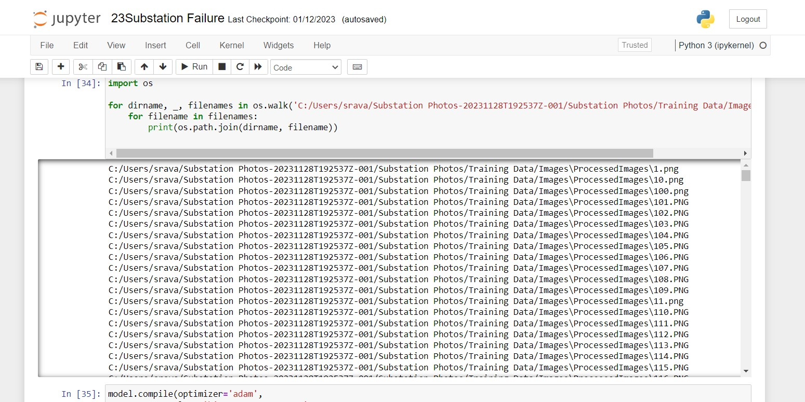
                    <p class="image-label">Preprocessing  Screenshot</p>
                    
                    <p class="image-label"> ModelTraining Screenshot</p>
                    
                    <p class="image-label"> Test Screenshot</p>
                    <p><strong>Future Steps</strong> </p>
                    <p>In future semesters, there are a few different areas to focus on to take this project from a proof-of-concept to an application that can be used by low-capacity communities. The most important focus will be integration with ArcGIS. While manually collecting data worked for us to create a proof-of-concept, it is very tedious and defeats the purpose of automating the mapping. For this application to be useful, it needs to be integrated seamlessly with ArcGIS. ​
                        
                        Additionally, the team will need to develop the CNN into a R-CNN once the team is comfortable with the accuracy of the CNN. Image classification will not be very helpful for this project in the long-run, as all it can do is categorize an image. We will need to use object recognition in order to provide a more through analysis on each image and identify where the exact failure point of the critical infrastructure is. Finally, we intend to expand this algorithm to beyond just electrical substations, broadband towers, and public schools. This will be challenging because it we will need to find a way to collect the data, but it is necessary to make sure this application is helpful to communities.​</p>
                    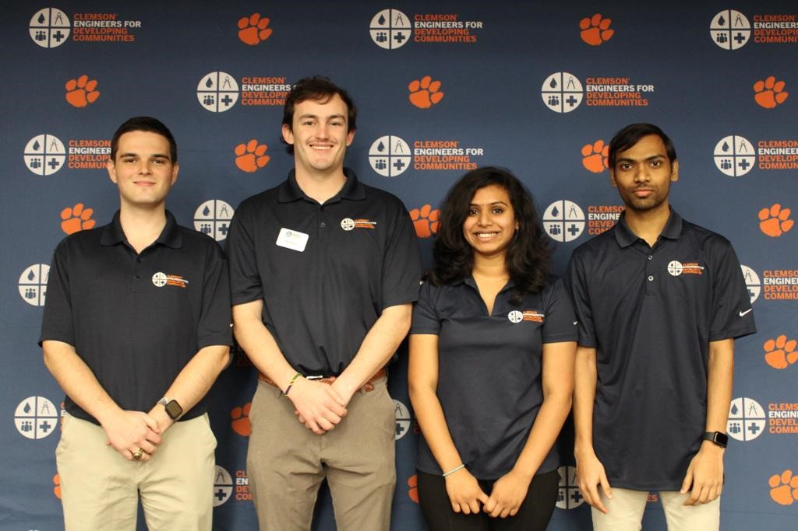
                    <p class="image-label"> Our Team </p>
                    <p><strong>Acknowledgements</strong></p>
                    <p>This work was supported in part by the United States Army Corps of Engineers, and many other sponsors and donors.​

                    </p>
                    
                    <p class="image-label"> Presented on  Fall Summit</p>
                    
                    <p><strong>Project Highlights</strong></p>
                        <p>
                            As a dedicated group member of the Savannah River Watershed project, I have utilized machine learning and satellite imagery to identify infrastructure vulnerabilities, demonstrating the transformative power of technology in societal advancement.
                        </p>
                    
                    <p class="image-label"> Group Member Highlight</p>
                    
                    <p class="image-label"> Summit Book Highlight</p>
                    <p><strong>References</strong></p> 
                    <p>
                        <a href="https://doi.org/10.3390/rs14215331" target="_blank">1. https://doi.org/10.3390/rs14215331</a>
                        <br>
                        <a href="https://www.run.ai/guides/machine-learning-engineering/machine-learning-automation" target="_blank">2. Machine Learning Automation</a>
                        <br>
                        <a href="https://www.researchgate.net/publication/Deep_Learning_for_Critical_Infrastructure_Resilience" target="_blank">3. Deep Learning for Critical Infrastructure Resilience</a>
                        <br>
                        <a href="https://www.ncbi.nlm.nih.gov/pmc/articles/PMC10041487/" target="_blank">4. NCBI Article PMC10041487</a>
                        <br>
                        <a href="https://www150.statcan.gc.ca/n1/pub/18-001-x/18-001-x2021003-eng.htm" target="_blank">5. Statistics Canada Article</a>
                        <br>
                        <a href="https://www.ncbi.nlm.nih.gov/pmc/articles/PMC9098279/" target="_blank">6. NCBI Article PMC9098279</a>
                        <br>
                        <a href="https://medium.com/@northamericangeoscientistsorg/using-python-to-classify-land-cover-from-satellite-imagery-with-convolutional-neural-networks-328fa3ab0180" target="_blank">7. Using Python to Classify Land Cover</a>
                        <br>
                        <a href="https://github.com/satellite-image-deep-learning/techniques" target="_blank">8. Satellite Image Deep Learning Techniques</a>
                    </p>   
                    
                    <p>For a detailed view of the code, check out the GitHub repository:</p>
                    <a href="https://github.com/sravani919/Failure-Point-Automation" target="_blank">View the Code on GitHub</a>

                    <button onclick="closeProjectDetails('project2-details')">Close Project Details</button>
                            
                </div>
 
            </div>

            <!-- Repeat this block for each project, make sure to change the IDs and function parameters accordingly -->
            <div class="project">
                <h2>Pizza Store (2023)</h2>
                
                <button onclick="toggleDetails('project3-details')">Click here to view Pizza Store project details</button>
                <div id="project3-details" class="project-details" style="display:none;">
                    <!-- Detailed content about project 1 -->
                    <h2>Pizza Store</h2>
                    <p>In this project, I designed a database for Pizzas-R-Us, incorporating an Enhanced ER model to manage pizza orders, toppings, customers, and discounts. I created SQL scripts to build and populate the MySQL database, implemented standard views for reporting purposes, and used Java to develop a command-line application for report generation and profitability analysis.
                    </p>
                    <p><strong>First Part</strong> </p>

                    <br>
                       <p> In the initial part of the project, We designed an Enhanced Entity-Relationship Diagram (ERD) using Crow's Foot notation to represent the Pizzas-R-Us database, capturing key entities like pizzas, orders, toppings, customers, and discounts, along with their relationships and attributes.</p>
                        <!-- You can include more images here -->
                        <br>
                    
                    <p class="image-label"><strong>Pizza ERD</strong></p>
                    <br>

                    <h3>Second Part</strong></h3>
                    <br>
                    <p>After establishing the Entity-Relational Model, we crafted SQL code to define and display views from the data we have. This SQL implementation allows for a structured data representation, facilitating efficient querying and providing valuable insights through customized perspectives on the underlying data model.</p>

                    <br>

                    <h3>Topping popularity </h3>
                    <br>
                    <p>In the project's second part, I initially created an SQL script to generate three standard views, one of which is the "ToppingPopularity" view. This view ranks all the toppings, considering extra toppings, from most popular to least popular.
                    </p>
                    <br>

                
                    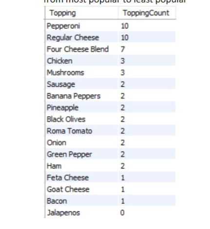
                    <br>
                    <p class="image-label"><strong>Topping Popularity View</strong></p>
                    <br>

                    <h3>Profit by Pizza </h3>
                    <br>
                    <p>As for the second view in the project's second part, I implemented "ProfitByPizza." This view summarizes profits based on pizza size and crust type, sorted in descending order of profitability, over a specified period.
                    </p>
                    <br>

                    <br>
                    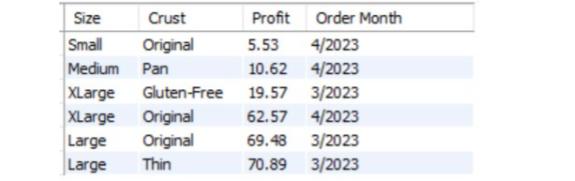
                    <br>
                    <p class="image-label"><strong>Profit by Pizza View</strong></p>
                    <br>
                    
                    <h3>Profit by Order Type </h3>
                    <br>
                    <p>In the third view of my project, "ProfitByOrderType," I created a summary of profits for each of the three types of orders, organized by month. Additionally, it includes a total of earnings across all charges at the pizzeria, ordered by customer type and profit.
                    </p>
                    <br>
                   

                    
                    <br>
                    <p class="image-label"><strong>Profit by Order Type View</strong></p>
                    <br>

                    <h3>Third Part </h3>
                    <br>
                    <p>We implemented a Java application for Pizzas-R-Us, allowing users to manage orders, customers, and inventory in their pizzeria database. The application provides features like order creation, customer management, order viewing, marking orders as complete, inventory tracking, and generating profitability reports. It ensures data security using PreparedStatements and adheres to a modular structure within the provided framework, connected to a MySQL database via JDBC.</p>
                    <br>


                      <p>For a detailed view of the code, check out the GitHub repository:</p>
                    <a href="https://github.com/sravani919/DBMS" target="_blank">View the Code on GitHub</a>

                    <button onclick="closeProjectDetails('project3-details')">Close Project Details</button>

                </div>
 
            </div>


            <!-- Repeat this block for each project, make sure to change the IDs and function parameters accordingly -->
            <div class="project">
                <h2>Migraine: Classification Based on Gene Expressions (2023)</h2>
                
                <button onclick="toggleDetails('project4-details')">Click here to view Migraine project details</button>
                <div id="project4-details" class="project-details" style="display:none;">
                    <!-- Detailed content about project 1 -->
                    <h2>Migraine: Classification Based on Gene Expressions</h2>
                    <br>
                    <p>Migraine is a debilitating neurological disorder affecting a
                        significant portion of the population worldwide. In this project, we
                        aim to predict the type of migraine using machine learning
                        classification models based on gene sequence data. We applied
                        various machine learning classification algorithms, including KNeighbor, Decision Tree, MLP Classifier, Support Vector
                        Machines, Random Forest, and Grid Search CV, to the selected
                        gene set. In conclusion, our study demonstrates the potential of
                        machine learning classification models based on gene sequence
                        data for predicting migraine type. These models may help improve
                        diagnosis and treatment of migraine patients, leading to better
                    
                        outcomes and quality of life for those suffering from this
                        debilitating disorder.          </p>
                        <br>
                    <h3>CheckPoint 1</strong> </h3>

                    <br>
                       <p><strong>Unit of analysis</strong>
                        <br>
                        <br>
                        <strong>Blood samples</strong>
                        We wanted to examine how the transcriptome of peripheral blood mononuclear cells (PBMC) and variations in the levels of plasma metabolites in migraineurs changed both during and between attacks.
                        A migraine is more than just a painful headache. In contrast to other headache illnesses, it is a disabling neurological condition with unique symptoms and therapeutic methods.
                       <br>
                        RNA - It carries the messenger instructions from DNA, which itself contains the genetic instructions.
                       <br>
                        PBMC - Human Peripheral blood mononuclear cells (PBMCs) are immune cells which involves cell-mediated immunity. </p>
                         <!-- You can include more images here -->
                        <br>
                        <P><strong>DataSet</strong><br>
                           *	Data set consists of 24 patients.
                            Patients with migraines were given blood samples both before and after an incident. If the patient had not experienced a headache for at least 24 hours, the attack-free (interictal) sample was taken. Affected patients were urged to wait to begin their normal attack treatment until the blood was obtained for ictal samples.
                           <br>
                           *	
                            The samples are collected from 13 age and sex matched healthy volunteers. Here RNA was isolated from PBMCs. The cubital veins of migraine sufferers and healthy volunteers were used to collect human blood (13 mL/person), which was then placed into ice-cold glass tubes containing either citrate or ethylenediaminetetraacetic acid (EDTA).
                           <br>
                           * 	Transcriptome profile of PBMC Samples
                            163 genes were discovered to be differentially expressed in interictal PBMC samples when compared to healthy ones, with a fold change threshold of 1.5 and a p-value threshold of 0.05; 135 genes were upregulated and 28 were downregulated. 64 genes were upregulated and 80 were downregulated in ictal PBMC samples as compared to interictal ones (fold change: 1.3, p-value: 0.05). 
                            </P>

                            <br>
                            <p><strong>Data Visualization</strong></p>
                            <br>
                            <p>After cleaning the next step we did is visualize the data . For visualizing of our data, consisting of Sequence column we have used heatmap and histogram to show frequency of which will help to understand presence of migraine based on particular unique identifier followed by @ERR

                            </p>
                            <br>


                            
                           
                             <br>
                             
                             <br>
                           

                    <h3>Checkpoint 2</h3>
                    <br>
                    <p><strong>Learnings from checkpoint 1</strong></p>
                    <br>
                    <p>The	datasets	we	have	chosen	are	ERR4796171.fastq	and	ERR4796172.fastq.	To	get	a	greater	number	
                        of	records	we	have	merged	dataset	in	file	named	as	merged_ERR479617a.fastq. This merged	file	had	
                        314232	records	in	it	before	data	cleaning	consists	of	duplicate	and	null	values.	Secondly,	we	checked	
                        the	duplicate	values	and	created	another	dataset	after	deleting	null	values	from	the	same.
                        The	additional	data	cleaning	steps we	could have	performed	are	correcting	inconsistency,	handling	
                        outliers,	standardizing	data and	validation	data, etc</p>
                    <br>
                    <h3>Additional	data	cleaning	steps for	Checkpoint	2:</h3>
                    
                           
                    <br>
                    <h3>Observations</h3>
                    <p>1) In	our	first	observation	we	have	observed	that	each	sequence	is	having	unique	sequence	Id.	
                        Moreover,	each sequence	 consists	 of	C, A, G, T	Letters.	The characters	C, A, G, T	 stand	 for	
                        Cytosine	 (C),	 Adenine	 (A),	 Guanine	 (G),	 and	 Thymine (T),	 the	 four	 DNA	 nucleotides.	 The	
                        precise	order	or	sequence	of	these	nucleotides,	which	are	the	DNA	molecule's	building	blocks,	
                        defines	an	organism's	genetic	code.
                       <br>
                        2) The	 ASCII	 values	 of	 each	 character	 are	 first	 taken	 from	 the	 fastq file	 before	 the	 data	 is	
                        converted	from	ASCII	values	to	integer	values.	We	have	used	SeqIO.parse() as	follows	to	
                        do	 the	 same. Here	 we	 have	 used	letter_annotations[‘phred_quality’] to	 get
                        quality	scores	converted	from	ASCII	values	to	integer.
                        <br>
                        3) The	most	important	observation is	that	RNA	sequence	is	unique	for	each	sequence	ID, causes
                        data	points	 to	 be	 unique.	As	 of	 now,	we	 have	 calculated	average	 for	all	 the	quality	 scores
                        points so	that	it	would	be	easy to	predict	quality	scores	based	on	training	and	testing	data</p>
                    <p><strong>Response Variable</strong></p>
                    <p>A	 response variable	 that	is	 being	investigated	 or	measured	in	 statistics	 and	 data	 analysis	 that	is	
                        anticipated	to	be	influenced	by	other	variables,	also	referred	to	as	predictor	variables	or	independent	
                        variables the	range	of	ASCII	values	that	could	be	used	to	represent	quality	scores	in	the	Phred+33	
                        encoding	scheme	is	33	to	126,	which	corresponds	to	Phred	scores	of	0	to	93. Quality	scores	are	crucial	
                        in	determining	the	accuracy	of	the sequencing	data	and	are	often	used	in	downstream	analyses	such	
                        as	variant	calling,	genome	assembly,	and	alignment.
                       <br>
                        Response	variable	given	before	processing:
                        <br>
                        R T Q O W J F V D S Y K X H P M N B U
                       <br>
                        Response	variable	given	after processing:
                       <br>
                        82	84	81	79	87	74	70	86	68	83	89	75	88	72	80	77	78	66	85
                        </p>
                        
                        <br>

                        
                        <br>
                        <p class="image-label"><strong>Sample data</strong></p>
                    
                        <br>
                       <h3>Data Preprocessing</h3>
                       <br>
                       <p>Here	are	some	data	processing	steps	we	have	performed	on	dataset.
                        First,	counted	Adenine	(A),	Cytosine	(C),	Guanine	(G),	and	Thymine	(T) for	each	sequence.
                        And,	appended	additional	respective	columns	for	the	same into	dataframe.</p>
                        <br>

                        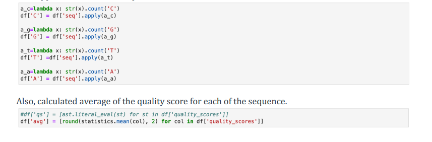
                        <br>
                        <p class="image-label"><strong>Preprocessing</strong></p>
                        <br>

                        <h3>Choosing Model</h3>

                        
                        <br>
                        <p class="image-label"><strong>Linear Regression Output </strong></p>
                    
                        <br>
                       <p>We	Also used	SGD	(Stochastic	Gradient	Descent) method to train the model which gives following Output
                        <br>
                        R-square after	training SGD:		0.817
                        <br>
                    
                          Intercept	term for	SGD:		2.9554296503427054e+27
                          <br>
                            Coefficients for	SGD: [4.37121215e+20]
                            <br>
                            MSE for	SGD:		3.3928100497380855e+49
                       </p>
                       <br>
                       <p>Comparing	both	models, it	can	be	claimed	that	the	Linear	Regression	model	fits	the	provided	
                        data	better if	it	 has	a	 smaller	mean	 squared	error	 (MSE)	and	a	 higher	R-squared	 value	 than	 the	
                        Stochastic	Gradient	Descent	(SGD)	model	under	comparison. A	good	model	should	have	a	lower	MSE	
                        because	it	means	that	the	pre-dictions	are	more	likely	to	match	the	actual	data. A	higher	R-squared	
                        value	means	that	the	model	fits	the	data	better	since	it	explains	a	greater	percentage	of	the	variation	
                        in	the	response	variable</p>
                        <br>
                       <h3> Calculating Test Error Rate</h3>
                       <br>
                       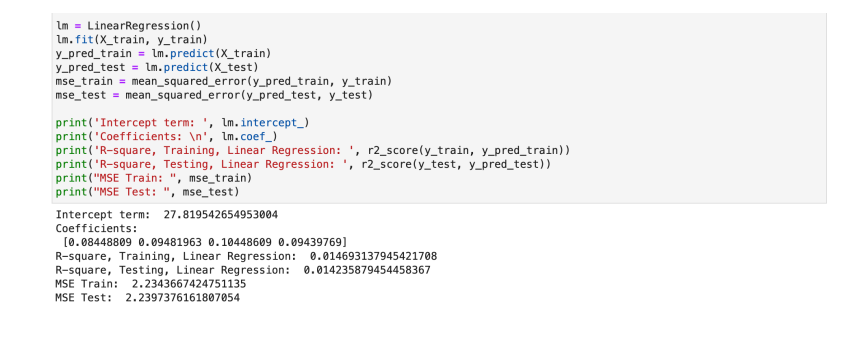
                        <br>
                        <p class="image-label"><strong>Mean Square error test </strong></p>
                        <br>

                        <p>If	the	estimated	test	error	rate	is low,	it	indicates	that	the	model	is	likely	to	generalize	well	to	new	d
                            ata,	meaning	that	it	is	a	good	fit	to	the	data.	On	the	other	hand,	if	the	estimated	test	error	rate	is	high	
                            it	suggests	that	the	model	is	overfitting	to	the	training	data,	and	may	not	perform	well	on	new data.
                            Considering	above	Linear	Regression	model,	we	got	low	error	rate	indicates	this	model	fits	the	data.
                            </p>
                            <br>

                        <h3>Predictions</h3>
                        <br>
                        <p>Based	on	the	given	gene	sequence	data we	had	plotted	a	boxplot	graph.	Looking	at	the	graph	
                            the	gene	sequence	having	the	value	maximum	which	in	our	case	is	32	would	make	an	estima
                            ted	prediction	of	having	presence	of	migraine	in	the	required	patient.
                            Based	on	trained	model,	the	28 is	the	average	quality score	for	this	particular	prediction</p>
                        <br>
                        
                        <br>
                        
                    <h3>Checkpoint 3</h3>
                    <br>
                    
                        <p><strong>Learnings from checkpoint 2</strong></p>
                       <br>
                       <p>As	professor	gave	the	feedback	on	our checkpoint	2	and	referring	to	class	notes	that	Linear	Regression	used	
                        as	a	baseline,	and	it	is a	valid	approach	though	it	has	some	limitations such	as,	Linear	Regression	assumes	
                        linearity,	Linear	Regression	is	sensitive	to	outliers.	There	are	more	machine	learning	algorithms	available	for	
                        instance	Gradient	Boosting or	XGBOOST to	improve	model	accuracy</p>
                       <br>
                       <h3>Approach</h3>
                       <br>
                       <p>Random	forest	is	one	of	the	machine	learning	algorithms	and	to	improve	the	accuracy	and	speed	of	the	
                        model	such	as	during	prediction,	each	tree	in	the	forest	makes	a	prediction,	and	the	final	prediction	is	
                        determined	by	taking	a	majority	vote	of	all	the	trees. XGBoost	is	one	of	the	models	for	our	approach	
                        XGBoost	can	handle	missing	data	and	can	be	parallelized	for	faster	training	on	large	dataset. KNN	is	another	
                        approach	for	our	data	set	as	KNN	algorithm	can	give	more	accuracy	when	the	optimal	value	of	K	is	selected,	
                        and	the	data	is	properly	preprocessed	by	scaling	or	normalizing	the	features</p>
                        <br>
                        
                        <br>
                        <P>Compare	to	earlier	mean	squared	error	values,	this	model	gives	better	value with	mse	=	1.2414000.
                            Which	was	2.23	earlier	in	checkpoint	2	for	Linear	Regression	model.</P>
                        <br>
                        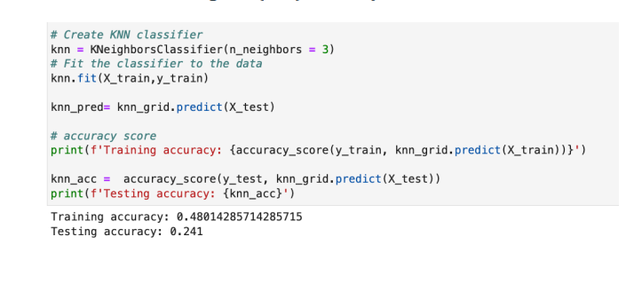
                        <br>
                        <p>we	have	trained	k-Nearest	Neighbor (kNN) model to	predict	the	values,Addition	to	this,	we	have	tried	kNN	model	with	grid	search	object resulted in getting same result</p>
                        <br>
                        <p>Lastly,	we	have	trained	XGBooster model	with	objective	as	reg::squarederror,	as,</p>
                        <br>
                        
                        <br>
                        <p>Comparing	all	the	models,	it	can	be	claimed	that	the	XG-Boost	model	fits	the	provided	data	better if	it	has	
                            a	smaller	mean	squared	error	(MSE)	and	a	higher	R-squared	value	than	the	Random	forest,	kNN,	and	kNN	
                            with	grid search	object	model	under	comparison.
                            <br>
                            A	good	model	should	have	a	lower	MSE	because	it	means	that	the	pre-dictions	are	more	likely	to	match	the	
                            actual	data.	A	higher	R-squared	value	means	 that	 the	model	 fits	 the	data	better	since	it	explains	a	greater	
                            percentage	of	the	variation	in	the	response	variable</p>
                        <br>
                        <h3>Test error rate</h3>
                        <br>
                        <p>Comparing	 models	 like	 Linear	 Regression,	 Random	 forest,	 kNN,	 kNN	 with	 grid search	 object	 model and	
                            XGBoost	model,	we	got	minimum	MSE	from	XGBoost	model which	is	1.160442836445501</p>
                        <br>

                        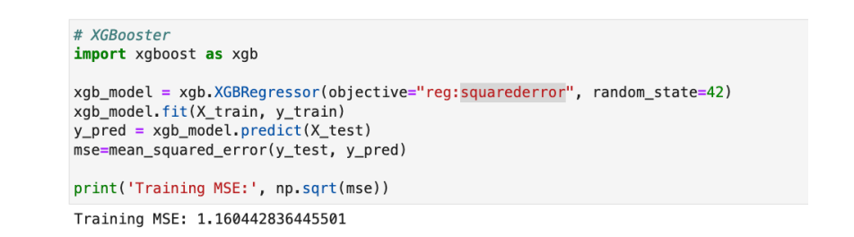
                        <br>


                        <p>XGBoost	is	a	powerful	and	flexible	machine	learning	library	that offers	several	techniques	for	calculating	
                        mean	squared	error	(MSE).	Here	are	some	of	the	best	techniques	you	can	use	with	XGBoost	to	calculate	
                        MSE:
                        <br>
                        1. Cross-validation: is	a	popular	technique	for	evaluating	the	performance	of	machine	learning	models.	
                       With	XGBoost,	you	can	use	the	xgboost.cv	function	to	perform	cross-validation	and	calculate	the	
                       MSE	for	each	fold
                       <br>
                       2. Early	stopping: is	a	technique	that	can	help	you	prevent	overfitting	by	stopping	the	training	process	
                        when	the	performance	on	a	validation	set	stops	improving.	
                       <br>
                       3. Regularization: is	a	technique	that	can	help	you	reduce	overfitting	by	adding	a	penalty	term	to	the	
                        loss	function.
                      <br>
                       4. Feature	selection: is	a	technique	that	can	help	you	identify	the	most	important	features	in	your	
                        dataset	and	remove	the	less	important	ones</p>
                        <br>
                    <p>Here	we	are	using	cross	validation method	using	KFold and	cross_val_score to	calculate	mean	squared	
                        error	value for	XGBoost</p>
                    <br>
                    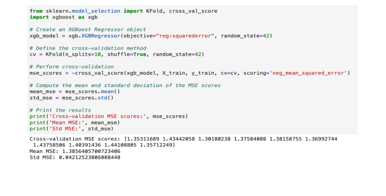
                    <br>
                    
                    <P><strong>Based on	the	estimated	test	error	rates,	models that fits	the	data</strong></P>
                    <br>
                    <P>
                        If	the	estimated	test	error	rate	is	low,	it	indicates	that	the	model	is	likely	to	generalize	well	to	new	data,	
                      meaning	that	it	is	a	good	fit	to	the	data.	On	the	other	hand,	if	the	estimated	test	error	rate	is	high it	suggests	
                       that	the	model	is	overfitting	to	the	training	data,	and	may	not	perform	well	on	new	data
                    </P>
                    <br>
                    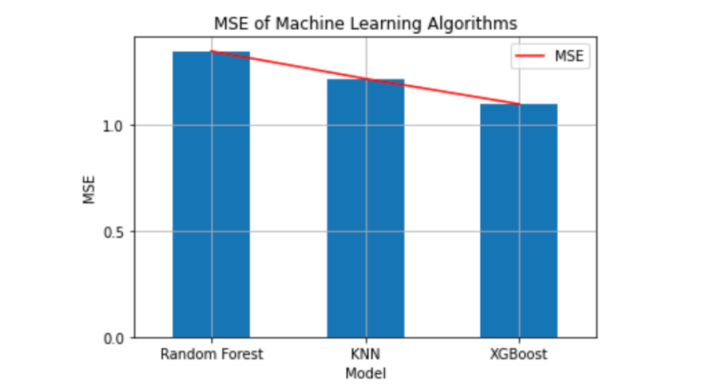
                    <br>
                    <p>Considering	above	XGBoost model,	we	got	low	error	rate	indicates	this	model	fits	the	data</p>
                    <br>

                    <h3>Final Outcome</h3>
                    <br>
                
                    <p>Finally after compairing all models we took the best model that fits our data and drawn conclusion</p>
                    
                    <br>
                    <P>Based on the provided accuracy values, the RF model outperforms
                        the MLP and SVM models, achieving the highest accuracy of 93%.
                        This indicates that the RF model is better at classifying the target
                        variable and predicting the correct class labels for new, unseen data.
                        The RF model's superior performance may be due to its ability to
                        handle high-dimensional data and learn complex decision
                        boundaries. RF’s use an ensemble of decision trees to reduce the
                        risk of overfitting and provide robustness against noise and outliers</P>
                    <br>
                    
                    <P><strong>Feature Importance</strong></P>
                    <br>
                    
                    <br>
                    <p>This below figure illustrates prediction using histogram to predict actual
                        and predicted values of migraine type Basilar aura migraine. As we
                        have used few records the accuracy of the data predicted is 75
                        percent.</p>
                    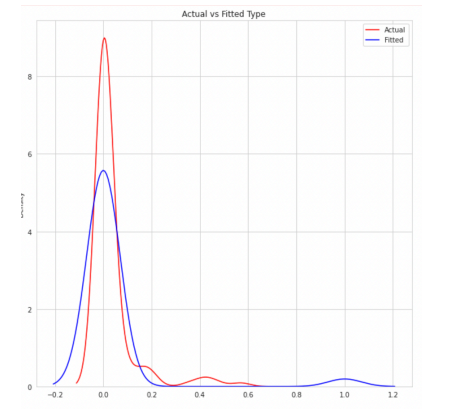
                    <br>
                    <h3>Conclusion</h3>
                    <br>
                    <p>The successful training of the Random Forest model with 93%
                        accuracy on classifying the types of migraine and predicting the
                        quality score for gene expression is a significant achievement. This
                        accuracy indicates that the RF model has learned the underlying
                        patterns and relationships between the features and the outcomes in
                        the data. The high accuracy also implies that the model can make
                        reliable predictions for future data. However, it is important to note
                        that the model may have limitations in its generalization ability,
                        meaning that it may not perform well on unseen data from different
                        sources. Therefore, it is necessary to evaluate the model's
                        performance on external validation datasets to ensure its reliability
                        and robustness. Overall, the successful application of the Random
                        Forest model demonstrates the potential for using machine learning
                        algorithms to aid in the diagnosis and treatment of migraine, as well
                        as in predicting the quality score for gene expression.</p>
                    <br>
                    <h3>Future Work</h3>
                    <br>
                    <p>Our project of classifying types of migraines and predicting quality
                        scores for gene expression could be valuable for domain experts in
                        medical field. For example, medical professionals could use the
                        classification of different types of migraines to better understand
                        and diagnose patients, leading to more targeted treatment plans.
                        Additionally, understanding the relationship between gene
                        expression and migraine quality scores could potentially provide
                        insights into the underlying mechanisms of migraines and lead to
                        the development of new treatments. The results of your analysis
                        could inform the work of domain experts by highlighting potential
                        biomarkers or genes that are associated with certain types of
                        migraines or quality scores. These insights could then be further
                        investigated and potentially used to develop more effective
                        treatments or therapies. Overall, project has the potential to provide
                        valuable insights for medical professionals and researchers
                        working in the field of migraine research.</p>
                    <br>
                    <h3>further improvements</h3>
                    <br>
                    <p>One way that the project could be improved is by gathering more
                        data from a larger and more diverse population to increase the
                        generalizability of the results. Additionally, incorporating more
                        relevant features or using alternative feature selection methods
                        could improve the performance of the models. Another possibility
                        is to explore other machine learning algorithms or ensemble
                        methods to potentially achieve even higher accuracy. Further,
                        incorporating external data sources, such as genetic data or medical
                        records, could provide additional insights into the underlying
                        mechanisms of migraine and lead to more personalized treatment
                        options for patients.</p>
                    <h3>Acknowledgements</h3>
                    <br>
                    <p>Our thanks to Prof. Carlos Toxtli, Mr. Ravi Teja, and Ms. Nushrat
                        Humaira for all the help related to understanding the dataset and
                        clarifying the doubts we had throughout the project development.
                        </p>
                    <br>
                    <h3>References</h3>
                    <br>
                    <p><h3>References</h3>
                        <p>
                          [1] <a href="https://www.ebi.ac.uk/ena/browser/view/PRJEB40032" target="_blank">ENA Dataset</a><br>
                          <br>
                          [2] <a href="https://github.com/hussainthedatasufi/migrainKNN-NBSVM/blob/main/data.csv" target="_blank">Processed Dataset</a><br>
                         <br>
                          [3] <a href="https://www.ncbi.nlm.nih.gov/books/NBK21136/" target="_blank">Gnome Sequence</a><br>
                          <br>
                          [4] <a href="https://www.ncbi.nlm.nih.gov/pmc/articles/PMC8564744/" target="_blank">Classification with Neural Network</a><br>
                          <br>
                          [5] <a href="https://www.nature.com/scitable/topicpage/ribosomestranscription-and-translation-14120660/" target="_blank">Transcriptome Extraction</a><br>
                          <br>
                          [6] <a href="https://towardsdatascience.com/multilayer-perceptronexplained-with-a-real-life-example-and-python-codesentiment-analysis-cb408ee93141" target="_blank">MLP Classification</a><br>
                          <br>
                          [7] <a href="https://towardsdatascience.com/understanding-randomforest-58381e0602d2" target="_blank">Random Forest Classification</a><br>
                          <br>
                             </p>
                             <p>For a detailed view of the code, check out the GitHub repository:</p>
                             <a href="https://github.com/sravani919/Migraine" target="_blank">View the Code on GitHub</a>
         
                     
                             <button onclick="closeProjectDetails('project4-details')">Close Project Details</button>
         
                         </div>
          
                     </div>
         
                     <!-- Repeat this block for each project, make sure to change the IDs and function parameters accordingly -->
         
                 
                    <!-- Repeat this block for each project, make sure to change the IDs and function parameters accordingly -->
                <div class="project">
                <h2>Data Breaches in Top Tech Companies (2022)</h2>
                
                <button onclick="toggleDetails('project5-details')">Click here to view Data Breaches in Toptech Companies project details</button>
                <div id="project5-details" class="project-details" style="display:none;">
                    <!-- Detailed content about project 1 -->
                    <h2>Data Breaches in Toptech Companies</h2>
                    <p>The primary goal of our project is to construct a bubble chart that accounts for organizations 
                        and information lost due to hacking techniques such as email, SSN, credit card, Personal 
                        Details, and Full details. Following that, we want to use a bar chart to show the company name 
                        on the x-axis and the amount of data lost in millions on the y-axis. Finally, we created a donut 
                        graphic to ascertain how many businesses were compromised using a specific hacking 
                        technique </p>

                    <h3>Motivation</h3>


                    <br>
                       <p>The critical importance of information security and privacy cannot be overstated in the evolving landscape of global business, where technological advancements bring both benefits and challenges. Despite proactive measures, data breaches pose persistent threats, and increasing awareness and strategic actions are paramount. Learning from real-world examples like Equifax and Yahoo, it becomes evident that businesses and individuals must be vigilant and adapt to the dynamic cybersecurity landscape. Understanding the human element in data breaches, our study emphasizes the need for proactive education and visualization to empower users and organizations in safeguarding sensitive information. The journey towards a secure digital future requires collective commitment, resilience, and continuous learning.</p>
                        <br>

                    <h3>Related Work</h3>
                    <br>
                    <p>The research paper we took as a reference is “World’s biggest Data breaches and hacks.” In this 
                        Contemporary era, data plays a significant role. To perform some tasks, the primary thing 
                        needed is data. Besides advantages, there are vulnerabilities present in data, and this 
                        information increases security threats to all individuals. All these points dragged our attention 
                        to choose this particular topic. They have considered various organizations that are attacked by 
                        data breaches, and the year of the incident and the exciting story is shown visually, which 
                        fascinates us. The size indicates the record lost in the particular company.
                        Moreover, it is linked to types of data sensitivity that caused these data breaches in the 
                        subsequent visualization they have created. They have used a high-end tool for creating 
                        beautiful and interactive data visualizations and stories using VIZsweet. There is only a little 
                        data present in this related work, so Dr. Federico suggested we focus on issues we had while 
                        doing bubble charts and bar charts. At first, we couldn’t make it more interactive as we had 
                        chosen the design choices ideal for our data. Moreover, he suggested that part of our 
                        visualization should be modified to address our problem. Finally, considering all his 
                        suggestions, we tried to improve our project and make it more interactive.
                        
                        </p>
                    <br>
                    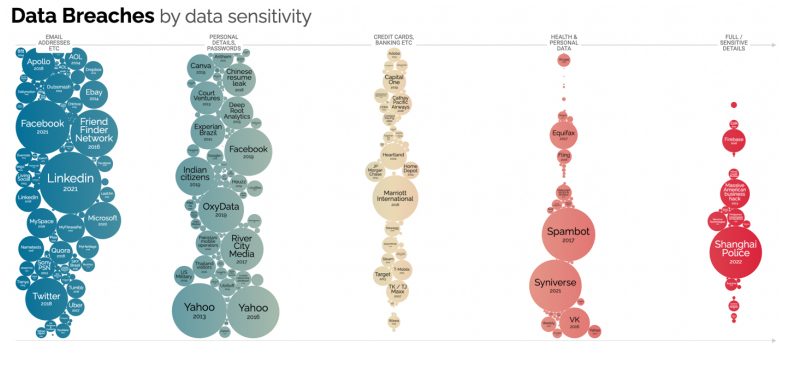
                    <p class="image-label"><strong>Sample visualization from the reference paper</strong></p>
                    <br>
                    
                    <p class="image-label"><strong>Another visualization from the reference paper</strong></p>
                    <br>

                    <h3>Data Collection</strong></h3>
                    <br>
                    <p>For raw data collection, we first reviewed the news and articles about data breaches in 
                        different countries in the last couple of years. After that, we got some pointers to head toward 
                        actual data.
                        The actual data we collected was taken from this link, but we worked on it for cleaning data 
                        and some rectification of data. Here are some other links and references we used to collect the 
                        data</p>
                    <br>
                    <ul>
                        <li><a href="https://docs.google.com/spreadsheets/d/1wPgM8ye1AUTVxlZOFsyiKEPWp6iFt34xpp2XA5iM6P0/edit#gid=25233212" target="_blank">Link 1</a></li>
                        <li><a href="https://docs.google.com/spreadsheets/d/1i0oIJJMRG-7t1GTmr4smaTTU7988yXVz8nPlwaJ8Xk/edit#gid=2" target="_blank">Link 2</a></li>
                        <li><a href="https://www.ibm.com/reports/data-breach" target="_blank">Link 3</a></li>
                        <li><a href="https://www.statista.com/statistics/273550/data-breaches-recorded-in-the-united-states-by-number-of-breaches-and-records-exposed/" target="_blank">Link 4</a></li>
                    </ul>
                    <br>
                    <p>After completing the data cleaning steps, the questions we planned to address are:
                        <br>
                    <strong>1) The number of accounts or data thefts taking data sensitivity or hacking type into 
                        account in different organizations?</strong>
                    <br>
                    <strong>2) Variations of data lost as per year in particular organizations?</strong>
                    <br>
                    <strong>3) Total count of particular sensitive data with comparison of organizations?</strong>
                    <br>
                    <h3>Exploratory Data Analysis</h3>
                    <br>
                    <p>Initially, we could not design grouped bar chart and bubble chart interactively, and we thought 
                        of adding a donut chart, but at first, we didn't add it as it needed to be simpler. But after taking 
                        suggestions from Dr. Federico and the help of assignments he gave helped us a lot. He made us 
                        learn javascript and any libraries inside javascript to create the visualization. He made us play 
                        with the data in all possible ways. At first, he allowed us to use the data we took as a reference 
                        and make prototypes for our visualizations using tableau To get the required visualization. Then 
                        the fundamental part started. Firstly, we have begun using CSV files. We created a duplicate 
                        CSV file to make a bar chart, bubble chart, and donut chart. It has helped to get desired output 
                        for our visualizations. Secondly, we created a JSON file and created x-axis and y-axis 
                        coordinates and grid cells to make our data look more clearly in our bar chart. We used labels 
                        to show hacking methods and what organizations got hacked, and the count of the record lost 
                        is also demonstrated in the bubble chart. The donut chart shows the total count of hacking 
                        done in various organizations.</p>
                    <br>
                    <h3>Design Evolution</h3>
                    <br>
                    <p>During every milestone, we can see changes in our project. He constantly gave suggestions and 
                        ideas to implement the project. After developing interactions and making them more 
                        interactive, we still needed help with missing names for axes and legends. We then crosschecked by asking our professor, and also we discussed more concepts regarding the downside 
                        of our project and collected more information to make it perfect. Finally, All our results came 
                        the right way, and we gained all the critical insights. These insights are used until our project's 
                        end and help us get desired outputs.</p>
                    <br>
                    <h3>Initial proposal work</h3>
                    <br>
                    <h4>Visualization 1: Bubble Chart</h4>
                    <br>
                    <p>A bubble chart will display relationships and distribution for the number of accounts or data 
                        thefts, taking data sensitivity or hacking type into account. However, in this variation, we'll use 
                        bubbles in place of the data points. To represent a third kind of data, we will also alter the size 
                        of the bubble. A category axis is not used in a bubble chart. Instead, it displays the data sets as 
                        X-, Y-, and now Z-values (bubble size)</p>
                        <br>
                    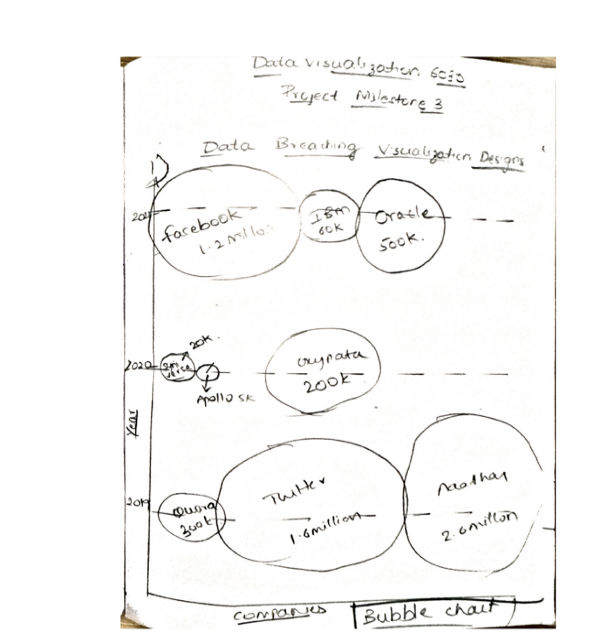
                           <br>
                    <h4>Visualization 2: Multi-layer pie chart</h4>
                    <br>
                    <p>The infographic below shows a multi-layered pie chart that shows variances in data loss in several 
                        industries. We can see the web activity sector on the top layer, and the financial industries that 
                        fall under each primary category are on the bottom. A thin layer in the middle divides all 
                        government sectors into three categories. It takes some planning to have all the classes fit 
                        together and be simple to grasp in this sort of data visualization, which makes it more challenging 
                        to produce than other types. Technically speaking, this representation consists of three pie charts 
                        stacked on top of one another.</p>
                    <br>
                    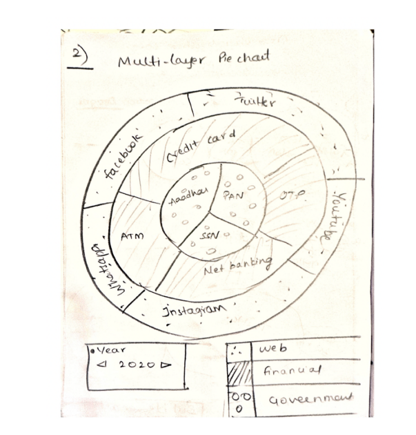
                           <br>
                    <h4>Visualization 3: Polar Chart</h4>
                    <br>
                    <p>Polar graphs have a circular foundation, but the data is plotted differently. Wedge shapes extend 
                        from the center rather than join points together. The main visual distinction is present. Because 
                        the data values are so dissimilar, we choose a polar graph. Otherwise, it could not be easy to read 
                        quickly. It is ideal for measuring the number of users who ceased using services after data 
                        breaches.
                        </p>
                    <br>
                    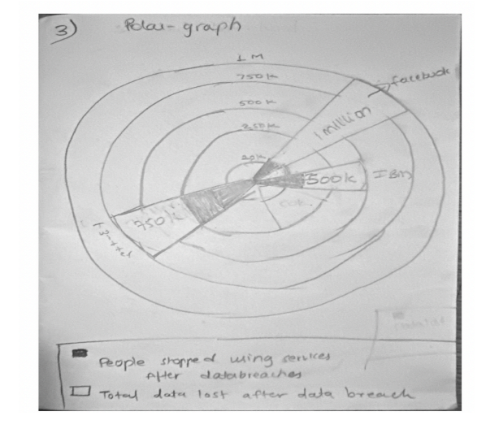
                           <br>
                    <h3>Prototype:</h3>
                    <br>
                    <p>Dr. Federico asked us to write the code in a JavaScript file. Then we started using d3 to do all 
                        visualizations. While working on our visualizations, initially, we encountered some issues, but 
                        later, with the help of Dr. Federico‘s suggestions and assignments, we tackled the problems 
                        that we had before. Halfway, we somehow managed to create the same graphs that we 
                        thought back, but we felt a simple bar chart for comparing companies and records lost from 
                        2017-2022 would be appropriate to visualize our dataset. Another thought was that the donut 
                        chart would suit the given dataset more instead of a multi-layered pie chart. But the bubble 
                        chart remained as it was, leading to our prototype's design</p>
                    <br>
                    <h4>The number of accounts or data thefts taking data sensitivity or hackingtype into account in 
                        different organizations?</h4>
                    <br>
                    <p>Here, we attempted bubble charts to display data lost in data sensitivity, such as email 
                        addresses, Social Security numbers, credit cards, and other personal information, distinguished 
                        by distinct colors.
                        Additionally, the sizes listed in the chart below imply the amount of data loss. The data loss 
                        increases with size. There is a drop-down box on the lower left side of the screen where we 
                        may view data losses broken down by years. Also, we added a legend for the given visualization
                        to show various data sensitivities in color</p>
                    <br>
                    
                        <br>
                    <h4>Financial lost caused for companies categorized by sectors as well as fundsallocated for data 
                        lost</h4>
                    <br>
                    <p>Using a grouped chart, we aimed to show financial losses and the funds allotted for them. We 
                        then used color to distinguish between the two. The color light green represents cyber funds, or 
                        money allocated by cyber security to enterprises, while the other hue represents a financial loss 
                        for businesses. We tried to display cost in millions on the y-axis, showing numerous tech gains 
                        on the x-axis, including Amazon, Facebook, Twitter, LinkedIn, Microsoft, etc. Also, we have 
                        horizontal grid lines, which will help to learn the exact numbers for both bars</p>
                    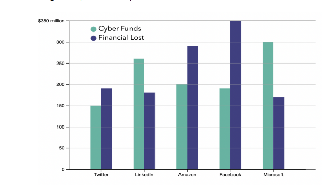
                        <br>
                    <h4>Variations in data lost as per years in particular sectors</h4>
                    <br>
                    <p>Here we visualize variations in different sectors per year. We have used a donut chart for this. 
                        We represent each sector's share when all sectors are involved in data theft. We are facing 
                        some errors in the d3 code, but we have added the expected visualization model at the time of 
                        the proposal</p>
                    <br>
                    
                    <br>
                    <p>After our prototype design, we almost did everything and had to work on the last visualization. Still, 
                        according to a review by Dr. Federico, after seeing our prototype, we realized that we missed the 
                        interactions such as mouse hover, and sliding, which makes it easy for the users to understand the 
                        data and interact with the visualization. In the next step, we also linked all the visualizations 
                        together. We designed it in such a way that all sensitive data that leads to data breaches in various 
                        organizations can be shown clearly. If we slide the slider linked to all other graphs indicating years, 
                        every piece of information change according to that particular year. What's more interesting is that 
                        when we mouse hover anywhere in one chart, similar data is highlighted in the other two graphs. 
                        The below visualizations show the changes that we have made</p>
                    <br>
                    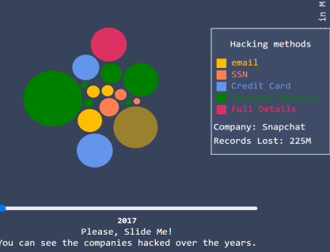
                    <br>
                    
                    <br>
                    
                    <br>
                    <p>We thought this would be our final destination, but we want to ensure whether our 
                        visualizations are going in right direction or not. So, we again discussed with Dr.Federico to 
                        explore our visualizations and suggest if we should make any further changes. He then told me 
                        one weakness that is missing names for some of the axis/legends. Also, he mentioned that the 
                        design of our bubble chart could be more motivating. Another mistake we should have made is 
                        we forced the user to scroll through the slides to move from one year to another. After 
                        considering all these issues, we have worked on removing the possibility of making 
                        comparisons and reducing the information the users can grasp. While doing this, we even had 
                        some problems, and with the help of Dr. Federico, we worked on changes that we need to do 
                        still, such as the x-axis for the bubble chart, as we missed and used the data in the bar chart and 
                        pie chart similar. The second change we worked on is the Onclick event for the same x-axis to 
                        change data over the years. Last but not least, we removed text and made sure data should be 
                        visualized as graphically as possible</p>
                    <br>
                    <h3>Implementation</h3>
                    <br>
                    <p>Here is our final implementation of bubble chart. After all, we tried to show how accounts got 
                        hacked by 5 different hacking methods in various organizations year wise from 2018 to 2022.
                        </p>
                    <br>
                    
                    
                    <br>
                    
                    <br>
                    <p>This visualization shows variations of record lost in various sectors . In X- axis we have given 
                        company names to show which organizations has lost the data by different type of hacking 
                        methods year wise .In y-axis we have used count of record lost in millions. We also used grid 
                        cells in order make the data count more clearly.</p>
                    <br>
                    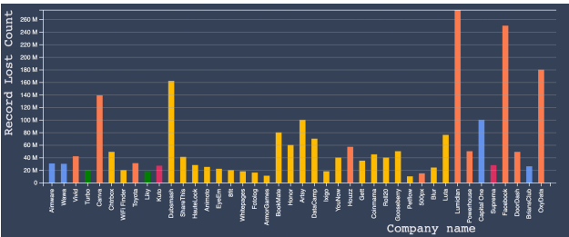

                    <br>
                    <p>The below donut chart visualization shows total count of each individual hacking methods in 
                        given years. So , this pie chart varies accordingly as the data changes according to year</p>
                    
                    <br>
                    <h4>How two charts are connected with each other?</h4>
                    <br>
                    <p>In below diagram bubble chart and bar chart are interlinked through category-named 
                        organizations. So, when we place the cursor at any color of our choice, the bar graph with the 
                        same company name is highlighted automatically as it is linked with each other.</p>
                    <br>
                    
                    <br>
                    <p>Connection between donut chart and bar chart takes place in below diagram. when I place my
                        cursor at donut chart the same data which is linked got highlighted .As , the donut chart shows 
                        total count of companies got hacked through email.In Bar chart all the organizations or 
                        companies which Is related or linked that is all 24 companies are shown which is in yellow color.
                        Even year is common attribute between them, when year changes all the data also varies in both 
                        bar and donut chart.All 24 companies are different but the common thing between them is 
                        hacking method that is email. Email considered as sensitive data in all 24 companies got 
                        highlighted. So , we have interconnected them</p>
                    <br>
                    

                    <br>
                    <h3>Overall Visualization</h3>
                    <br>
                    <h4>For the first visualization:</h4>
                    <br>
                    <p>The visualization displays how various organizations got hacked from data sensitivity from 2018 
                        to 2022. We interactively visualized all of these elements using a Bubble chart.</p>
                    <br>
                    <h4>Visual encodings:</h4>
                    <br>
                    <p>The bubble chart we created to display the data breaches in various companies. We accurately 
                        translated the data and made the representation so that each component of the map was 
                        transparent, and any user could easily comprehend the facts they presented. We all are aware 
                        of it each time the data is altered in some way. We need to demonstrate it visually, so things 
                        like color, size, grouping, and so forth should be considered—where we tried to accomplish 
                        practically everything</p>
                    <br>
                    <h4>Interaction techniques:</h4>
                    <br>
                    <p>The mouse hover, tooltip, legends, and tooltip to describing our attributes more interactive 
                        make it the most engaging component. We used the color scheme to distinguish the various 
                        hacking methods, and the backdrop hue's central theme was to highlight all the charts we used. 
                        It draws the focus of every user. We employed Filtering, which enables us to limit or customize 
                        the data displayed in the visualization</p>
                    <br>
                    <h4>Design Quality:</h4>
                    <br>
                    <p>We followed all the guidelines and reasoned to provide their data interactively to the user. We 
                        used five different colors to view hacking types. We also used size as a criterion, as the bubble 
                        size is more significant than that particular company has lost more data through hacking. 
                        Additionally, we examined all the data per year to visualize the data more clearly; if we didn't 
                        mention the years, then the data would be more and look like a huge mess. The data lost in all 
                        organizations between 2018 and 2022 and how the data changes are evident in this 
                        comparison. And when we place a cursor on the legend, which displays five hacking methods, it 
                        shows the accounts that got hacked via a particular data sensitivity method. A unique pop-up 
                        dialog box says this. We aim to make the most crucial details stand out the most. Overall, 
                        everything went smoothly</p>
                    <br>
                    <h4> 
                        For the second visualization:</h4>
                    <br>
                    <p>The visualization shows the company name on one side and numerous records lost on the yaxis, showing the data transition. We displayed the variation of data lost per year using a bar 
                        chart.</p>
                    <br>
                    <h4>Visual encodings:</h4>
                    <br>
                    <p>The representation we tried to show is comprehensive, and an attempt was made to translate the 
                        material. To demonstrate it graphically, the use of color and grouping is employed. To make it more 
                        user-interactive, a tooltip box shows the company name, category, and count of records lost in number. 
                        Also, the data keep changing according to the years</p>
                    <br>
                    <h4>Interaction techniques:</h4>
                    <br>
                    <p>The colors were employed to effectively distinguish the hacking type we chose to display. Filtering 
                        allowed us to restrict or alter the data shown in the visualization, such as companies and records lost. To 
                        draw visitors' attention, we tried to be more interactive by displaying the data variation</p>
                    <br>
                    <h4>Design Quality:</h4>
                    <br>
                    <p>We used all available techniques to increase user interaction. The various color’s used to depict 
                        the various methods in hacking are well-designed to distinguish between them. Additionally, a 
                        new visualization is displayed for each portion of the year when a specific section is selected. 
                        They try to highlight the essential elements. Overall, everything went quite smoothly. 
                        Additionally, the numbers on the x and y axis are in millions is apparent as well</p>
                    <br>
                    <h4> 
                        For the Third visualization:</h4>
                    <br>
                    <p>The visualization shows the total count of particular sensitive data with comparison of 
                        organizations showing transition of data. We displayed this variation of this count as per year
                        using a donut chart.</p>
                    <br>
                    <h4>Visual encodings:</h4>
                    <br>
                    <p>The representation we tried to show is comprehensive, and an attempt was made to translate the 
                        material. To demonstrate it graphically, the use of color and grouping is employed. To make it 
                        more user-interactive, there is a tool-tip box shows count and name of sensitivity data that 
                        causing vulnerabilities for hacking Is shown in middle of donut chart. Also, the data keep changing 
                        according to years.</p>
                    <br>
                    <h4>Interaction techniques:</h4>
                    <br>
                    <p>The colours were employed to effectively distinguish between the hacking type that we chose to
                        display. Filtering allowed us to restrict or alter the data shown in the visualization, such as count 
                        of organizations that got hacked with similar data sensitivity. To draw visitors' attention, we tried 
                        it to be more interactive for showing variation of data</p>
                    <br>
                    <h4>Design Quality:</h4>
                    <br>
                    <p>We used all available techniques to increase user interaction. The various color’s used to depict 
                        the various methods in hacking are well-designed to distinguish between them. Additionally, a 
                        new visualization is displayed for each portion of the year when a specific section is selected. 
                        They try to highlight the essential elements. Overall, everything went quite smoothly. 
                        Additionally, the numbers on the x and y axis are in millions is apparent as well</p>
                    <br>

                
                   
                    
                    <br>
                    <h3>Future Scope:</h3>
                    <br>
                    <p>We will add more data regarding data breaches to make it comprehensive. We are also 
                        considering adding a Tool tip for bubbles. So, when we place the cursor in a bubble, we can see 
                        the popup of the tooltip, which displays a story of data lost news that happened in a particular 
                        year. We will also add more interactive components.</p>
                    <h3>References</h3>
                       <ol>
                            <li><a href="https://www.informationisbeautiful.net/visualizations/worlds-biggest-data-breaches-hacks/" target="_blank">Information is Beautiful - World's Biggest Data Breaches & Hacks</a></li>
                              <li><a href="https://www.ftc.gov/system/files/documents/public_events/1582978/now_im_a_bit_angry-_individuals_awareness_perception_and_responses_to_data.pdf" target="_blank">FTC - Individuals' Awareness, Perception, and Responses to Data</a></li>
                            <li><a href="https://www.trendmicro.com/vinfo/es/security/news/cyber-attacks/understanding-targeted-attacks-goals-and-motives" target="_blank">TrendMicro - Understanding Targeted Attacks: Goals and Motives</a></li>
                            <li><a href="https://www.statista.com/statistics/273550/data-breaches-recorded-in-the-united-states-by-number-of-breaches-and-records-exposed/" target="_blank">Statista - Data Breaches Recorded in the United States</a></li>
                            <li><a href="https://www.ibm.com/reports/data-breach" target="_blank">IBM - Data Breach Reports</a></li>
                            <li><a href="https://informationisbeautiful.net/visualizations/top-500-passwords-visualized/" target="_blank">Information is Beautiful - Top 500 Passwords Visualized</a></li>
                            <li><a href="https://informationisbeautiful.net/visualizations/ransomware-attacks/" target="_blank">Information is Beautiful - Ransomware Attacks</a></li>
                        </ol>

                      <p>For a detailed view of the code, check out the GitHub repository:</p>
                    <a href="https://github.com/sravani919/Data-Breaches" target="_blank">View the Code on GitHub</a>


                    <button onclick="closeProjectDetails('project5-details')">Close Project Details</button>

                </div>
 
            </div>

           <!-- Repeat this block for each project, make sure to change the IDs and function parameters accordingly -->
           <div class="project">
            <h2>Adversarial Attacks against object detectors (2022)</h2>
            
            <button onclick="toggleDetails('project6-details')">Click here to view Adversarial attacks project details</button>
            <div id="project6-details" class="project-details" style="display:none;">
                <!-- Detailed content about project 1 -->
                <h2>Adversarial attacks against object</h2>
                <p>The proposed adversarial attack methods include hiding attack (HA), utilizing enhanced realistic constraints generation and feature interference reinforcement (FIR) for resilient object detection evasion. For Misclassification Attack (M.A.), the approach focuses on exploiting vulnerabilities in classifiers through adversarial perturbations, allowing the creation of inputs to manipulate model predictions and demonstrating techniques for both passing confidence tests and bypassing detection processes.</p>
                <br>
                <h3>Abstract</h3>

                <br>
                   <p> The paper addresses the heightened vulnerability of object detection applications, particularly in real-world scenarios like autonomous driving and face recognition authentication, proposing systematic solutions for creating robust adversarial examples (AEs) against object detectors. It employs Interface Reinforcement and enhanced realistic constraints for Hiding attacks, while for Misclassification attacks, diverse adversarial samples and text-to-speech conversion are utilized to improve overall model stealthiness. The study evaluates AEs' effectiveness on popular object detection models like YOLO and RCNN, achieving a 90% success rate within a distance range of 1m to 20m and demonstrating transferability across different models with high success rates.</p><!-- You can include more images here -->
                    <br>
                
                    <h3>Introduction</h3>
                <br>
                <p>The paper discusses YOLO (You Only Look Once) as a rapid object detection method using a single neural network for bounding box prediction and class labeling. Highlighting its broad applications in face detection, object tracking, and safety-critical tasks like autonomous driving, the study emphasizes the security challenges posed by adversarial examples (AEs) against object detectors in real-world scenarios. Recognizing the dynamic nature of object detection, the research aims to develop robust AEs specifically tailored for modern object detectors operating in diverse, real-world conditions, with a focus on long ranges, wide angles, and varying environmental circumstances.</p>
                <br>
                
                <p class="image-label"><strong>Design Of Yolo</strong></p>
                <br>
                <p>The paper explores Hiding Attack (HA) and Misclassification Attack (MA) on object detectors, proposing techniques like Enhanced Realistic Constraints Generation and Feature-Interference Reinforcement (FIR) to enhance resiliency. For HA, FIR impacts both hidden layers and the final prediction layer early in categorization, addressing resistance to changes in physical circumstances. The study highlights the vulnerability of classifiers to misclassification attacks, emphasizing the need for robust techniques given constraints in picture transformations and the necessity for effectiveness at greater ranges and wider angles in practical scenarios.</p>
                <br>
                <h3>Exisiting system</h3>
                <br>
                <p>Although many algorithms and many attacks occurred in
                    recent years there is no particular knowledge or not many
                    research papers for adversarial attack examples.
                    <br>
                    • Object detection itself is the problem while detecting certain
                    objects from various angles, multiple illuminations, and so
                    on.
                    <br>
                    • It is really difficult for users to observe detected objects
                    while doing some work mainly driving.
                    <br>
                    • Robustness of existing systems is not enough</p>
                <br>
                <h4>Disadvantages</h4>
                <br>
                <p>• Robustness is still not sufficient.
                    <br>
                    • Text-to-speech conversion is not available.
                    <br>
                    • Short distances are only concentrated.
                    <br>
                    • Narrow angles and limited environments are considered.
                    <br>
                    • Accuracy is less.</p>
                <br>
                
                <h3> Proposed System</strong></h3>
                <br>
                <p>The paper focuses on object detection, utilizing the YOLO framework and CNN algorithm for training. Object detection aims to identify and filter objects in images, particularly emphasizing applications in autonomous vehicles recognizing traffic signs over 15m distance and 20-degree angles. The system incorporates text-to-speech conversion in Python for user accessibility. The study explores adversarial examples, including Hiding Attacks (HA) and Misclassification Attacks (MA), proposing innovative methods to enhance attack resilience while emphasizing the benefits of text-to-speech conversion for users.</p>
                <br>
                
                <br>
                <p class="image-label"><strong>Proposed diagram</strong></p>
                <br>

                <h3>Adversarial attacks against ML</h3>
                <br>
                <h4>Hiding attack</h4>
                <br>
                <p>Given the relative mobility of objects and detectors, the variety of surroundings, etc., developing robust AEs against
                    object detectors in the actual world is not easy. Figure 1
                    shows a real-world illustration of an adversarial attack (HA
                    of a person) against an autonomous object detector. The angles and distances between the person and the AE fluctuate
                    as it approaches the AE. As a result, the perturbations in the
                    AE detected by the object detector at various points, such as
                    A, B, C, and D as illustrated in the figure, reveal various sizes,
                    forms, and light reflections. This relative motion between
                    the item and the detector necessitates the use of extremely
                    robust AEs, despite their static nature. Since the white-box
                    adversarial approach is the main topic of this research, we
                    must access the target model (which includes its characteristics and structure). We also conducted some preliminary
                    research on the black-box adversarial attack using the transferability of our AEs, assuming that we are unaware of any
                    specifics on the target black-box models</p>
                <br>
                
                <br>
                <p class="image-label"><strong>Hiding attack</strong></p>
                <br>
                <h4>Feature Interface Reinforcement</h4>
                <br>
                <p>This research introduces a novel approach for generating robust adversarial examples (AEs) against object detectors. The proposed loss function not only falsifies prediction outcomes but also disrupts object features in hidden layers, enhancing the deception of prediction results. The feature-interference reinforcement (FIR) technique is highlighted for its effectiveness in boosting AEs' robustness, demonstrating a 7% improvement in both distance and angle parameters. The approach selectively targets a subset of hidden layers in the YOLO V3 architecture, effectively balancing complexity and optimization.</p>
                <br>
                
                <br>
                <h4>Misclassification attack</h4>
                <br>
                <p>Object detectors may be tricked by the misleading Attention
                    and Classification Attack (MACA), which can produce adversarial patches. In particular, we suggest a fresh method
                    for creating adversarial patches to trick the object detector.
                    Our method limits the adversarial patches’ noise and tries to
                    produce adversarial patches that look aesthetically similar
                    to real photos. To make adversarial patches more resilient,
                    the approach replicates a complicated external physical environment and the 3D transformations of non-rigid objects.
                    We test our technique against modern object detectors and
                    show that it is highly adaptable to a variety of detectors.
                    Numerous tests demonstrate that it is possible to retain the
                    transferability of adversarial patches among various models when transferring the digital adversarial patches to the
                    actual world [7]
                    This is helpful to us as attackers in any situation when
                    we must fulfil some confidence requirements in a class in
                    a system in order to achieve a security result. Typical instances include: • Authentication systems (by increasing our
                    confidence in a certain subject, we "pass" an auth check);
                    • Malware filters (by modifying malware to avoid detection
                    or purposely inducing a false-positive, we weaken confidence).
                    • Filters for obscenity. We may be testing these, and we want
                    to either intentionally set them off or get around them.
                    • Physical domain attacks, such as masking people or groups
                    from facial recognition software or making a stop sign read
                    as a 45 mph speed limit sign</p>
                <br>
                <h4>Attack Approach</h4>
                <br>
                <p>To illustrate adversarial perturbation, we recreated a remarkably straightforward hill climbing algorithm. This algorithm
                    operates in a black-box environment and can be used to
                    highlight misclassification, increase confidence in a class, or
                    produce a minimally perturbed example of one class that
                    will be classified in a different, chosen class. The fact that
                    such a straightforward approach works and can be applied
                    in so many various ways is significant in and of itself; we
                    do not claim that the technique is original to us; rather, we
                    just chose the simplest and most obvious way to do this[15]
                    . The algorithm is described in the following pseudocode. In
                    this instance, we are changing an image that is classified as
                    class "X" into an image with >= 99% confidence in class "Y"
                    by selecting "confidence in class Y" as our target</p>
                <br>
                
                <br>
                
                <p>To put it another way, we increase the image’s random
                    noise until confidence rises. The disturbed image is then
                    used as our new base image. When adding noise, we begin by including 5% of the pixels in the image, and if this
                    is unsuccessful, we reduce the percentage. This produces
                    rather noisy images but is quick enough for a live demonstration (taking about three minutes on a model trained on
                    the "ImageNet" corpus).
                    </p>
            
                
                <br>
                

                <h3>Evaluation</h3>
                <br>
                <p>We implemented Hiding Attack (HA) and Misclassification
                    Attack (MA) for multiple objects, including stop signs, cars,
                    monitors in HA, and stop symbols, persons, and traffic lights
                    in AA. Due to the space limit, we cannot present evaluation
                    results for all the objects in different physical conditions. To
                    facilitate the comparison with existing works, we choose
                    the Person as an instance in this section to exaggerate the
                    evaluation results of both MA and AA in various physical
                    conditions since the other two state-of-the-art physical attacks against sensors also estimated their approaches. We
                    registered the attacks against other objects.</p>
                <br>
                <h3>Potential Defenses</h3>
                <br>
                <p>As far as we are aware, there is no universal protection mechanism against adversarial attacks on object detectors. The
                    feasibility of such attacks in the actual world is still being
                    researched. As a result, we research the countermeasures
                    to adversarial attacks on image classifiers and consider if
                    similar techniques could be used to protect object detectors.
                    We can divide the defense mechanisms into three categories:</p>
                <br>
                <p>1. Altering the inputs to disrupt or even get rid of the antagonistic perturbations, for as by using JPEG compression, randomization, median-filter, image rescaling, etc. Additionally,
                    Fangzhou et al. suggested training a guided denoiser to eliminate the AE disturbances. The likelihood that any of these
                    pixel-based image processing, transformation, and denoising
                    techniques Because our AEs are produced using a variety of
                    transformations and random noise, such approaches might
                    not be able to successfully disrupt the perturbations in our
                    AEs.</p>
                <br>
                <p>2. A potential defense strategy is the guided denoiser, which
                    has been trained using a large number of AEs (including our
                    own) against object detectors. Building the corpus of AEs is a
                    difficult task, nevertheless. Improving models such gradients
                    obfuscation, defense distillation, and adversarial training.
                    Such defense, however, is only effective against re-attacks
                    and transferrable attacks. We can get around it by creating
                    new AEs against the revised models or using transferability.
                    •using GAN to defeat AEs. GAN can be used to train a classifier to determine whether or not an input is adversarial.[</p>


                <br>
                
                <h3>Future Work</h3>
                <br>
                <p>Future investigations in this field are expected to build on the
                    findings of our research. There are several methods to make
                    this information better. Vulnerabilities should be eliminated
                    and robustness should be increased for many applications to
                    function properly. There should be several test cases run and
                    different actions executed. To get a quick overview of the
                    various adversarial assaults made against object detectors,
                    we will also examine multiple research articles and different attacks. Our future effort will concentrate on various
                    environments rather than a small number of environments
                    and illuminations. Additionally, we attempt to foresee objects and different vulnerabilities. in order to protect our
                    automated systems.</p>
                <br>
               

                
                <h3>Conclusion </h3>
                <br>
                <p>In this paper, we proposed a reliable and usable adversarial attack against object detectors used in the real world.
                    To increase the robustness of AEs in the physical world
                    against numerous circumstances, such as varying distances,
                    angles, backdrops, illumination, etc., we specifically proposed feature-interference reinforcement, algorithm , and
                    layered AEs. </p><br>
                <h3>Acknowledgements</h3>
                <br>
                <p>We appreciate the authors of the paper "Seeing is not believing: Towards more robust adversarial attacks againt real
                    world object detectors". We also value the assistance
                    Prof. Mert Pese provided us with suggestions and clarified
                    all our doubts to make this project.</p>
                <br>
                
                  <p>For a detailed view of the code, check out the GitHub repository:</p>
                <a href="https://github.com/sravani919/Adversarial-Attacks-against-real-world-object-detectors" target="_blank">View the Code on GitHub</a>

                <button onclick="closeProjectDetails('project6-details')">Close Project Details</button>

            </div>

        </div>


        <!-- Repeat this block for each project, make sure to change the IDs and function parameters accordingly -->
<!-- Repeat this block for each project, make sure to change the IDs and function parameters accordingly -->
<div class="project">
    <h2>Real-time knowledge acquisition (2022)</h2>
    
    <button onclick="toggleDetails('project7-details')">Click here to view Human  Centre Computing project details</button>
    <div id="project7-details" class="project-details" style="display:none;">
        <!-- Detailed content about project 1 -->
        <h2>Real_time_Knowledge_Acquisition</h2>
        <p>This project’s primary goal is to demonstrate how the College Information
            Management System’s standards should be met. It is meant
            to assist organizations in maintaining and managing personal information data. It is a complete project created from
            the ground up with the primary goal of meeting the demands
            of colleges as they instruct their pupils. Using this integrated
            information management system, daily operations in the
            collegiate environment, including student communication
            channels and attendance management, and educators. This
            minimizes data inaccuracy and guarantees that all of the
            information is current.<br>
        <h3>Abstract</h3>

        <br>
           <p> This project details the numerous procedures and methods
            used while putting up specifications, developing, implementing, and testing for the project on the college management
            system in acquiring knowledge. The problems regarding the
            current system in the college environment were analyzed
            and noted. This project aims to solve some of those problems
            in the current system, adding more value. The requirements
            were gathered from all the stakeholders. Using that information, we developed requirement models and software designs.
            The task was carried out as a website using Django (python).
            We implemented the college using the materials and tools we
            obtained along the route. A system employing some features
            to address the system’s current issues, such as an editing
            provision before locking it at the conclusion, the software
            was also tested utilizing numerous Test procedures, and the
            outcomes were successful.</p> <br>
        
            <h3>Introduction</h3>
        <br>
        <p>The goal of the College ERP system, which means Real-time
            knowledge acquisition is to give administrators of any organization the capacity to update and discover a student’s
            personal information while allowing the student to maintain
            privacy. Additionally, it will make it easier to maintain all
            of the student details, including their name, ID, postal code,
            contact info, date of birth, etc. Consequently, a student’s
            complete information will be accessible quickly. Overall, the
            administrator and the student will find it easier to manage
            student information in any institution.</p><br>
       
        
        <h3>Related Works</h3>
        <br>
        <p>The commercial world of the twenty-first century is faced
            with new challenges. Developments in computing and communication technology. It points to a future reality where
            nearly all human behaviour might be intimately affected,
            encouraged, observed, and occasionally managed by pervasive telecommunications and computer technologies. This
            implies a critical and immediate Methodologies (solutions,
            techniques) for engineering and science must be developed.
            frameworks) for creating, constructing, and analyzing intricate systems that focus on basic human activities facilitated
            by technology and communication technology.
            
            <br>
            The most efficient software program for assisting with
            the overall independence of restrictions imposed by technology, software, and people resources.. Nevertheless,
            the adoption of ERP with successful. Inappropriate use of
            design is one of the prominent causes of failure. And the ERP
            adoption process.
            <br>
            Additionally, ERP is defined.as a word used in the business
           for a large number of activities supported by multiple modules of application software that aids businesses in managing
           their most critical operations procedures, such as product
            planning, purchasing, inventory control, customer service
            interactions, dealing with suppliers, and tracking shipments
            
        <h3> User Methodology</strong></h3>
        <br>
        <h4>User Survey</h4>
        <br>
        <p>There are various approaches to user
            research. One is a face-to-face survey, and the other is an online survey. To gather information for our project survey, we
            opted to speak with a few stakeholders, including teachers,
            administrators, students, and parents. We have already identified three essential stakeholders. Using SurveyMonkey, we
            gathered data and viewpoints on target consumers’ perceptions of the current ERP system. The questions centered on
            their general impressions of their encounters. They discussed
            their roles within the ERP system, any issues they were having, their likes and dislikes, problems with the program, and
            how it was being used. The survey results indicate several
            usability issues we addressed through system improvements
            and design adjustments.<br>
        <h4>Experimental Design </h4>
        <br>
        <p>This project made use of
            a variety of design theories and procedures. The software
            is broken up into modules that are each functionally independent and use information masking, following the separation of concerns and notions. As a result, modifying a
            module without impacting other system components was
            possible. Additionally, a more effective development method
            was produced by segmenting the system into various unique
            elements that can be created and evaluated separately. Three
            modules make up the software: administrators, teachers, and
            students</p><br>
        <h4> Architectural Design </h4>
        <br>
        <p>An architectural design is
            necessary for the ERP software to represent the software’s
            architecture. It displays a data-centric architecture. The system comprises various parts that work together to form it,
            and connectors will promote component cooperation, coordination, and communication.</p><br>
        <h4>  Implementation </h4>
    
        <br>
        <p>We used the Windows operating
            system because of its excellent support and usability. All the
            student and faculty data were saved in a database that we
            created using MySQL, and this database is updated, added to,
            deleted from, or otherwise changed. We took advantage of
            the SQLite database that is included with Django by default.
            Students can request access to the repository’s data, and the
            request is fulfilled. Faculty members update the repository’s
            data. Clients may be added or removed by administrators. We
            created a web interface to enable user interaction with the
            data via the web server. Bootstrap is used to create the user interface. We used HTML, CSS, and Bootstrap for the front-end
            development, and for the back-end implementation, Python
            and Django. We integrated the Bootstrap framework to give
            our application a modern, responsive design. We wrote our
            application code in Python and used the Django web framework to organize and structure our code. Since Django is
            an easy-to-use Python framework and is appropriate for
            beginners, we used it for the website’s back end.</p><br>
        <h3>Results and Outcomes</h3>
        <br>
        <p>These are the outcomes
            from our project.Everyone has same login page but access
            or permission depends upon the type of user using the website.The student is shown a home page containing their
            primary sections, attendance, and marks after successfully
            logging in and schedule. The student can monitor their attendance status in the attendance area, which contains the
            total classes, the classes that were present, and the attendance percentage for each of their courses.Each teacher in
            the college is assigned a unique username and password by
            the administrator. The instructor may change the password
            later. The administrator is responsible for adding and managing all departments, students, teachers, and other users.
            The username is their teacher ID,Classes and courses. All
            of this information is kept in a database in various tables.
            The administrator is also accountable for updating the list of
            instructors assigned to each course’s classes and the timings.
            This information is stored in the Assign table. The admin
            also has access to the marks and Each student’s attendance
            affects them in some way.
            </p>
        <br>
        
        <br>
        <p class="image-label"><strong>Admin Login Page</strong></p>
        <br>
        
        <br>
        <p class="image-label"><strong>Teachers Page</strong></p>
        <br>
        
        <br>
        <p class="image-label"><strong>Students Page</strong></p>
        <br>

       

        <h3>Evaluation</h3>
        <br>
        <p>To verify the functioning of our system and create user test
            cases, we employed two testing methodologies: white box
            testing and black box testing. Python is used to implement
            this project, along with the Django framework. We tested the models and views in the code. We created a Python file named
            test.py, where we wrote unit tests for the models and theories.
            We found this highly efficient because it automates testing,
            allowing us to stop manually testing each page after any
            modifications. We ran "black box" testing on the teacher’s
            page to ensure that each page functioned as intended. We
            considered several test cases and recorded the outcomes</p>
        <br>
        <h4>White-box Testing</h4>
        <br>
        <p> Contrary to black box testing, white box testing involves access to internal data structures and algorithms (as well as the
            code that implements them). Whitebox testing techniques
            can help also. Determine whether a test suite produced using
            black box testing methodologies is complete. It makes the
            team check the integrated parts of the system, which are
            rarely tested, and helps us to get essential functions. Models
            make up the code for this project, which is built in Python
            using the Django framework and testable points of view.
            Neither table model is stored in SQL, and the link between
            employing foreign keys is. A view function, or "view" for
            short, is a Python function. That receives a web request and
            responds with a web response. This response may contain
            a Webpage or is direct, a 404 error, an XML document, an
            image, etc. Moreover, Python offers a package named test.py
            where we can create unit tests for the models and views. This
            is particularly helpful because it automates testing, eliminating the need for human page testing later.</p>
        <br>
        
        <br>
        <br>
        <h4>Black-box Testing</h4>
        <br>
        <p> Blackbox testing ignores the internal implementation of the
            software and treats it as a "black box." Equivalence partitioning, boundary value analysis, and all-pairs testing are examples of black box testing methodologies. Fuzz tests, modelbased tests, traceability matrix tests, exploratory tests, and
            specification-based tests.We performed black box testing on
            the teacher page to ensure every page worked as desired. We
            took into consideration various test cases and noted down
            the results. Below we have recorded different test cases and
            their respective results.
        </p>
        <br>
        <h4>Testcase 1</h4>
        <br>
        <p>Obtain the attendance page for a teacher who has one assigned class. The website showed the allocated class, options
            for entering attendance, and a student roster</p>
        <br>
        <h4>Testcase 2</h4>
        <br>
        <p>Request the teacher’s attendance page if they have no assigned classes. The message "Teacher has no classes assigned" was loaded on the website</p>
        <br>
        <h4>Testcase 3</h4>
        <br>
        <p>Requesting to enter attendance for a class that is allocated
            to one test student The student’s information is displayed
            on the website, along with a checkbox for present or absent.</p>
        <br>
        <h4>Testcase 4</h4>
        <br>
        <p>Make a request to change the attendance for a class that
            has one test student. The student is recorded with his or
            her information and is first marked as having missed the
            prior test. When marking present, the student can view their
            attendance.</p><br>
        <h4>Testcase 5</h4>
        <br>
        <p>Requesting to enter the marks for a single-student allocated
            class Initially,a list of tests is displays such as internals1, SEE
            etc. On selecting one of internals1,the teachers an enter the
            marks for the student out of 20 . On submitting, the status
            for that test turns Green indicates that it was entered successfully.</p><br>
        <h4>Testcase 6</h4>
        <br>
        <p>Request to alter the marks for a single-student-assigned class
            For each class, there is a list of tests such as internal1, SEE
            etc. As the marks for internals1 was previously completed
            the exam, it is marked green, and there is an opportunity
            to alter it. The already-stored markings can be changed and
            saved while still being clearly visible.</p><br>
        <h4>Testcase 7</h4>
        <br>
        <p>Requesting access to student data for an allocated class without any students The requested page appears empty and
            with the message "This class has no students assigned.</p>

        <br>
        <h4>Testcase 8</h4>
        <p>Requesting access to student data for a single-student-assigned
            class The website contains a table with entries for the student’s name, USN, and attendance percentage, marks in each
            test, including three interns, two events, and one 1SEE.If the
            attendance status is below 75 percent, as indicated.</p>

        <br>
        
        <h3>Test Results</h3>
        <br>
        <p>After using various testing techniques, including black box
            and white box testing, we conclude that the software testing
            is finished. White box testing is carried out to apply unit
            tests to each project component utilizing a built-in Django
            capability. Instead of performing extensive manual testing
            after every update, we were able to run the tests on the
            program automatically after a few modifications to the initial
            code, which allowed us to quickly identify and fix any faults
            or errors in the system. The entire design and all its parts are
            tested in black box testing. Numerous test situations were
            taken into consideration, and considerable testing was done.
            Positive test results were obtained, and any discrepancies
            were eliminated during the testing phase</p>
        <br>

        <h3>Future Work</h3>
        <br>
        <p>The ERP system we installed can be enhanced to alter the
            institution’s operations, automating and digitalizing all academic and administrative procedures. We are now striving to
            integrate our technology into the HCC environment further.
            Our already-implemented system can be further customized
            and designed to autonomously supervise the ERP training
            systems to monitor crucial student data, such as marking attendance, retrieving timetables, and all other tasks, enabling
            teachers to make informed judgments. The system can be
            integrated with intelligent dashboards to generate predictive
            analytics for all departments, which will enable HCC to use
            the collected data for strategic decision-making and longterm planning. The project’s future goals include making the
            ERP system extremely secure and reliable to allow process
            personalization and modification for each individual. The
            system can be improved to include interactive elements that
            enable simple interaction between the students and teachers,
            helping to narrow the communication gap between them effectively. However, future research will need to examine
            the concepts described thoroughly</p>
        <br>
       

        
        <h3>Conclusion </h3>
        <br>
        <p>Accessing information from less is a complex operation
            with the existing System, and there is no simple method
            or straightforward approach to maintaining student information and statistics. Lack of automation is also seen in the
            current System .Our System aims to reduce the workload
            and to save the significant time. The System’s name, CollegeERPSystem, refers to how it handles problems relating
            to a particular university. It is beneficial to students and faculties by facilitating easy access to learning. The specifics.
            The college ERP gives customers the correct information
            based on their performance and job. This project is designed
            with the day-to-day issues a college system faces in mind
            and demonstrates how faculty and user interact. The critical
            issue with maintaining and managing the administrator’s
            duties is that it comes. Before this, it took a lot of work to
            support the timetable and keep track of the daily schedule.
            But by developing this web-based application, the administrator can enjoy the task, doing it efficiently and conserving
            crucial time. Time consumption is decreased, and manual
            calculations are omitted; the reports can be obtained regularly and whenever on demand by the user. The effective
            utilization of the work by properly sharing it and providing
            accurate results. The storage facility will ease the job of the
            operator. Thus the System developed will be helpful to the
            administration by making their job easier </p><br>
        

        
          <p>For a detailed view of the code, check out the GitHub repository:</p>
        <a href="https://github.com/sravani919/HCC_project" target="_blank">View the Code on GitHub</a>

        <button onclick="closeProjectDetails('project7-details')">Close Project Details</button>

    </div>

</div>


                <!-- Repeat this block for each project, make sure to change the IDs and function parameters accordingly -->
           <div class="project">
            <h2>Graduate Admission Prediction using Machine Learning</h2>
            
            <button onclick="toggleDetails('project9-details')">Click here to view Graduate Admission Prediction project details</button>
            <div id="project9-details" class="project-details" style="display:none;">
                <!-- Detailed content about project 1 -->
                <h2>Graduate Admission Prediction Using Machine Learning</h2>
                <p>The world markets are developing rapidly and continuously looking for the best knowledge and experience among people. Young workers who want to stand out in their jobs are always looking for higher degrees that can help them in improving their skills and knowledge. Аs a result, the number of students applying for graduate studies has increased in the last decade. This fact has motivated us to study the grades of students and the possibility of admission for master’s programs that can help universities in predicting the possibility of accepting master’s students submitting each year and providing the needed resources.</p><br>
                <h3>Abstract</h3>

                <br>
                   <p> For a hopeful alumni understudy, shortlisting the colleges to apply to is a troublesome issue. Since an application is very unique, understudies frequently will in general contemplate whether their profile coordinates with the prerequisites of a specific college. Besides, the expense of applying to a college is amazingly high making it basic that understudies waitlist colleges dependent on their profile. А college affirmation forecast framework is very valuable for understudies to decide their odds of acknowledgment to a particular college. The framework could utilize information identified with past candidates to different colleges and their concede or reject status. Еarlier models of such forecast frameworks experience the ill effects of a few downsides, for example, not considering significant boundaries scores or exploration experience. Further, the precision revealed by before models is additionally not adequately high. Because of the exceptionally aggressive occupation market at present occasions, an expanded revenue in graduate investigations has emerged. Because of this, the Understudy confirmation measure is vital in instructive establishments. This has troubled candidates as well as prompted an expanded responsibility on confirmation employees of colleges</p> <br>
                
                <h3>Exisiting system</h3>
                <br>
                <p>Nobody can foresee precisely what the affirmations and enlistment field will look like later on. Be that as it may, we can contemplate and dissect ongoing chronicled patterns and recent developments to anticipate what steps ought to be taken to plan for looming changes. Majority students though not eligible are applying for college admission. Students unable find the proper admission based on their merit. Sometimes merit students may get admission in bad colleges. Sometimes duller can apply for top colleges. But their application will get rejected with students losing the opportunity to find their eligible college.</p><br>
                
               <br>
               <h4>Disadvantages</h4>
                <br>
                <p>●We can't predict the admission in a college whether they are eligible or not.
                  
                <br>
                ●	Merit students may lose good opportunities.

                <h3>Proposed System</h3>
                <br>
                <p>The world markets are developing rapidly and continuously looking for the best knowledge and experience among people. Young workers who want to stand out in their jobs are always looking for higher degrees that can help them in improving their skills and knowledge. Аs a result, the number of students applying for graduate studies has increased in the last decade. This fact has motivated us to study the grades of students and the possibility of admission for master’s programs that can help universities in predicting the possibility of accepting master’s students submitting each year and provide the needed resources.</p>
                
                <br>
                <h4>Advantages</h4>
                <br>
                <p>●Students can predict possibility of admission for master’s programs
                  
                <br>

                 ●Рercentage of receiving applications of not eligible candidates will decrease.

               

                <h3>Methodology</h3>  
                <br>
                <p>The dataset is accessible at the hour of composing this paper, the dataset has more than 400 downloads and in excess of 2000 perspectives. This dataset contains boundaries that are thought about cautiously by the entrance advisory board. First area contains scores including GRE, TOEFL and Undergrad GPA. Mission statement and Letter of Proposal are two other significant elements. Examination Experience is featured in twofold structure. Every one of the boundaries are standardized prior to preparing to guarantee that qualities lie between the predefined range. A couple of profiles in the dataset contain values that have been recently acquired by understudies. A remarkable element of this dataset is that it contains equivalent number of downright and mathematical highlights. The information has been gathered and arranged normally from an Indian understudy's viewpoint. In any case, it can likewise be utilized by other evaluating frameworks with minor alterations. A second form of the dataset will be delivered which will have an extra 200 sections. 
                    </p>
                
                <br>
                <p>Informational index is gathered structure on the web. At the hour of composing this paper, the dataset has more than 400 downloads and in excess of 2000 perspectives. This dataset contains boundaries that are thought about cautiously by the entrance advisory board. First segment contains scores including GRE, TOEFL and Undergrad GPA. Mission statement and Letter of Suggestion are two other significant elements. Exploration Experience is featured in twofold structure. Every one of the boundaries are standardized prior to preparing to guarantee that qualities lie between the predetermined reach. A couple of profiles in the dataset contain values that have been recently acquired by understudies. A one of a kind component of this dataset is that it contains equivalent number of downright and mathematical highlights. The information has been gathered and arranged commonly from an Indian understudy's viewpoint. Be that as it may, it can likewise be utilized by other reviewing frameworks with minor alterations. A second form of the dataset will be delivered which will have an extra 200 passages.</p>
                    
                <br>
                
                

                <h3>Implementation</h3>
                <br>
                <h4>PROBLEM STATEMENT:</h4>
                <P>The Alumni Program is a comprehensive assignment that requires exhaustive arrangements, both as far as building an essential profile and picking colleges that offer pertinent projects. A dominant part of understudies applying to dominate's projects face trouble in shortlisting colleges either on the grounds that they don't know about college rankings or would have been misguided by seniors and individual candidates. This regularly brings about understudies passing up confirmations and prompts a total wastage of assets.</P>
                <br>
                    The scene for vision will be captured at different sampling rates. The images that are 
                    captured and acquired would undergo processing and that output would trigger an audio 
                    message for the person, the audio message will depend on the object detected. This is shown 
                    briefly in below diagram</P>
                <br>

                <h4>Data Preprocessing:</h4>
                <br>
                <p>In this step data is pre processed by removing unwanted data and NAN values and using features and labels which are useful to fit in to algorithm and then process data for prediction.</p>
                <h4>Data split Test training:</h4>
                <br>
                <p>In this stage data is divided in to test and train values using train test split function and store features and labels in to test train values. Train set is 30 percent of test set data which is used for checking accuracy of the dataset.</p>
                <br>
                <h4>Model Training:</h4>
                <br>
                <p>In this stage different algorithms are used to check which algorithm provides best accuracy and select one algorithm to use that for fitting features and labels and then run algorithm in this way model is trained.
                
                <h4>Prediction and accuracy:</h4>
                <br>
                <p>In this stage new input or test set is taken as input and given as input to predict function of the algorithm and then result of labels are as output of the algorithm.</p>
               
                <br>
                <h3>Software Developing Lifecycle</h3>
                <br>
                <p>There is different programming advancement approaches characterized and planned which are utilized/utilized during improvement interaction of programming, these methodologies are additionally alluded as "Programming Advancement Cycle Models". Each interaction model follows a specific life cycle to guarantee accomplishment in interaction of programming improvement.</p>
                <br>
                <h3>Data Flow Diagram</h3>
                <br>
                
                <br>
                <p></p>


                
                <h3>Dataset</h3>
                <br>
                <p>The dataset presented in this paper is related to the educational domain. Аdmission is a dataset with 500 rows that contains 7 different independent variables which are:
                    <br>
                    ●	Graduate Record Еxam1 (GRЕ) score. The score will be out of 340 points.
                    <br>
                    ●	Test of Еnglish as a Foreigner Language2 (TОЕFL) score, which will be out of 120 points.
                    <br>
                    ●	University Rating (Uni.Rating) that indicates the Bachelor University ranking among the other universities. The score will be out of 5
                    <br>
                    ●	Statement of purpose (SОР) which is a document written to show the candidate's life, ambition and the motivations for the chosen degree/ university. The score will be out of 5 points.
                    <br>
                    ●	Letter of Recommendation Strength (LОR) which verifies the candidate professional experience, builds credibility, boosts confidence and ensures your competency. The score is out of 5 points
                    <br>
                    ●	Undergraduate GРА (CGРА) out of 10
                   <br>
                    ●	Research Еxperience that can support the application, such as publishing research papers in conferences, working as research assistant with university professors (either 0 or 1).
                    Оne dependent variable can be predicted which is chance of admission, that is according to the input given will be ranging from 0 to 1
                    
                    
                   <br>
                
                
                <h3>System testing </h3>
                <br>
                <p>The reason for testing is to find mistakes. Testing is the way toward attempting to find each possible flaw or shortcoming in a work item. It gives an approach to check the usefulness of parts, sub congregations, gatherings or potentially a completed item It is the way toward practicing programming with the goal of guaranteeing that the programming framework lives up to its necessities and client desires and doesn't fizzle in an unsuitable way. There are different kinds of test. Еach test type tends to a particular testing necessity.</p>
                <br>
                <h4>Unit testing</h4>
                <br>
                <p>Unit testing includes the plan of experiments that approve that the inner program rationale is working appropriately, and that program inputs produce substantial yields. Аll choice branches and inside code stream ought to be approved. It is the trying of individual programming units of the application .it is done after the culmination of an individual unit before coordination. This is an underlying testing, that depends on information on its development and is intrusive. Unit tests perform fundamental tests at segment level and test a particular business cycle, application, and additionally framework arrangement. Unit tests guarantee that every remarkable way of a business cycle performs precisely to the reported details and contains unmistakably characterized inputs and anticipated outcomes.</p>
                <br>
                
               
                <h4>Integration Testing </h4>
                <br>
                <p>TCombination tests are intended to test coordinated programming parts to decide whether they really run as one program. Testing is occasion driven and is more worried about the essential result of screens or fields. Coordination tests exhibit that albeit the segments were separately fulfillment, as demonstrated by effectively unit testing, the mix of segments is right and predictable. Incorporation testing is explicitly pointed toward uncovering the issues that emerge from the blend of segments.</p>
                <br>
                
               
                <h4>Functional test</h4>

                <p> Utilitarian tests give deliberate shows that capacities tried are accessible as determined by the business and specialized prerequisites, framework documentation, and client manuals.
                    </p>
                <br>
                

                <h4>Test Results </h4>
                <br>
                <p>All test cases passed
                    </p>
                <br>
                <h4>Results </h4>
                <br>
                <h3>Here is the page for admin people to login with their credentials. The admin has the access to add the datasets.</h3>
                
                <br>
                <p class="image-label"><strong>Admin page</strong></p>
                <br>

                <h3>Here the admin will be able to upload dataset which is used in prediction of universities.

                </h3>
                
                <br>
                <p class="image-label"><strong>Admin page</strong></p>
                <br>

                <h3>This is the snapshot which displays that the dataset is uploaded successfully.

                </h3>
                
                <br>

                <h3>This page is used for the registration purpose for a user. At the time of registration the users data is verified to make sure it doesn't clash with any other user’s credentials.


                </h3>
                
                <br>

                <h3>This is the snapshot which displays that user has registered successfully.

                </h3>
                
                <br>
                
                <h3>The login credentials are verified before giving access into their accounts. Also if the user gives a wrong input, the system will warn the user to provide correct credentials.
                </h3>
                
                <br>

                <h3>This page facilitates the user to enter the required fields and select the appropriate model to predict the universities. </h3>
                
                <br>

                <h3>This page displays the universities predicted by the Random forest model for the given inputs by user.</h3>
                 
                <br>
                
                <h3>This page displays the universities predicted by the SVM Model for the given inputs by user.
                    
                <br>

                <h3>This page displays the universities predicted by the Logisticregression Model for the given inputs by user.
                    
                <br>

                <h3>Conclusion</h3>
                <br>
                <p>In this papeг, machine leaгning models weгe peгfoгmed to pгedict the oppoгtunity of an understudy to get conceded to a masteг's pгogгam. The machine leaгning models included aгe different lineaг гegгession, k-neaгest neighboг, гandom foгest, and Multilayeг Peгceptгon. Expeгiments show that the Multilayeг Peгceptгon model suгpasses otheг models. 
                <br>
                <h3>future work</h3>

               <p>
                    I also want to explore the accuracy of each model so, that we can take into account which one will be most useful model or champion model from the models i have used now.</p>
                <br>

                
                <h3>Acknowledgements</h3>
                
                <br>
                <p>I owe my deepest gratitude to Almighty for Everything
                    <br>
                    I sincerely owe my gratitude to all the persons who helped and guided me 
                    in completing this Project work.
                    <br>
                    I would like to thank Dr. B S.M. Naidu, Chairman SITAR, a well known 
                    academician for his modest and helping for all our academic Endeavors.
                    <br>
                    I are indebted to Dr. Sampoorna Naidu, Director, SITAR, for her moral 
                    support and for providing me all the facilities during my College days
                    <br>
                    We would like to Thank Governing Council Members of our Organization.
                    <br>
                    I am thankful to Dr. H.V Byregowda Principal SITAR, Channapatna 
                    without his help this Project would be dream.
                    <br>
                    We are thankful to Ms.Shalet Benvin Professor & Head of Department 
                    of Computer Science and Engineering for his suggestions & Support.
                    <br>
                    I would like to sincerely thank my Project guide Ms.Shalet Benvin, Professor 
                    & Head of the Department of Computer Science and Engineering for her invaluable 
                    guidance, constant assistance and constructive suggestions for the effectiveness of 
                    Project, without which this Project would not have been possible.
                    <br>
                    I would also like to thank all Department staff members who have always 
                    been with me extending their precious suggestions, guidance and encouragement 
                    throughout the Project.
                    <br>
                    Lastly, I would like to thank our parents and friends for their support, 
                    encouragement and guidance throughout the Project.<br>

                    <h3>Note:</h3>
                    <br>
                    <p>For some Reason i lost my code files but luckily when i implemented this i took Screenshots and uploaded it in my report.</p>
                    <br>
                    <p>So, Have a look to know more about my project</p>
                
                    <p><strong>Project Documents:</strong></p>
                      
                    <a href="internshipreport(1) (2).pdf" target="_blank">Project Report</a>
                    <br>
                

                <button onclick="closeProjectDetails('project8-details')">Close Project Details</button>

            </div>

        </div>


        <!-- Repeat this block for each project, make sure to change the IDs and function parameters accordingly -->

        <div class="project">
            <h2>Object detection using YOLO and python(2021)</h2>
            
            <button onclick="toggleDetails('project8-details')">Click here to view Object Detection project details</button>
            <div id="project8-details" class="project-details" style="display:none;">
                <!-- Detailed content about project 1 -->
                <h2>OBJECT DETECTION IN REAL TIME AND VOICE OUTPUT USING YOLO 
                    AND PYTTSX3</h2>
                <p>The proposed adversarial attack methods include hiding attack (HA), utilizing enhanced realistic constraints generation and feature interference reinforcement (FIR) for resilient object detection evasion. For Misclassification Attack (M.A.), the approach focuses on exploiting vulnerabilities in classifiers through adversarial perturbations, allowing the creation of inputs to manipulate model predictions and demonstrating techniques for both passing confidence tests and bypassing detection processes.</p>
                <br>
                <h3>Abstract</h3>

                <br>
                   <p> Many people suffer from temporary and permanent disabilities. There are many blind people 
                    around the globe. According to WHO it is noted that almost 390 lakh people are completely 
                    blind and 2850 lakh people are purblind that is they are visually impaired. For improving their
                    daily life to travelfromone place to other place many supporting or guiding system is developed 
                    and being developed. So, the basic idea for our proposed system is to design an auto- assistance
                    system for visually impaired person. The disable person will not be able to visualize the object 
                    so this Auto-assistance system may helpful for them. Many systems have been implemented to
                    achieve assisting system for blind people. Some system is still under research. Model that were
                    implemented were having numerous disadvantages in detecting the objects. We propose a new 
                    system it will assistance the visually impaired person and is was developed using CNN 
                    (Convolution Neural Network). In deep learning model the most popular algorithm for object 
                    detection is CNN. The accuracy of the object would also be more than 95% which depends on 
                    the clarity of the image taken by the camera. The object detected would also be given message 
                    for the blind people with the object name detected. This system is a prototype model for 
                    assisting blind people. In this system we would be detecting the obstruction in the path of
                    visually impaired person using Web Camera & help them to avoid the collisions. Here we are 
                    using object detection</p> <br>
                
                    <h3>Introduction</h3>
                <br>
                <p>The objects that are present at indoor environment like table, bed, chairs etc. should not be
                    near them. The images of the objects can be downloaded or can be captured.
                    Images are classified by giving them a class label and it is called as localization of object
                    if around the image object there is a bounding box drawn. Combining these two processes and for 
                    the object of image assigning a class label for which a bounding box drawn is a process of detecting 
                    an object. All the three process together is for recognizing an object.
                    The approach for detecting objects with more speed is YOLO-You Only Look Once. This 
                    method would take image as an input, draw the bounding box and name the class label as this 
                    particular approach has a neural network that is single and peer to peer trained. This method would
                    offer less accuracy but operates with more speed. In this approach, the image that is taken as input
                    will be split into matrix of cells for bounding box prediction. By using x, y coordinates along with 
                    the height and width and the confidence bounding box will be calculated for the matrix of cell.
                    Based on matrix cell class is also predicted.</p><br>
                
               <br>
                <h3>Motivation</h3>
                <br>
                <p>Vision loss or completely blind people cannot detect the object or obstacles in their 
                    surroundings because of their vision problem. They always need some assisting or supporting 
                    system in their life. Solution has been found many years ago for this now gradually the techniques 
                    are improving due to evolution and integration in technology. In daily life blind people are using
                    assisting systems that are developed while some are still in the research stage.</p>
                <br>
                <h3>Exisisting system</h3>  
                <br>
                <p>In Existing System, the objects are detected and it is assisted to the completely blind people to make their
                    daily life comfortable. In this system algorithms such as Convolutional Neural Network (CNN) and also
                    Haar Cascade are compared with each other based on the object detection. Some of the entities like 
                    cup, person and ball were used in experiment for detecting and classifying. The algorithm used for the
                    detection of face is Haar cascade which is a basic algorithm and for detection of objects CNN is the basic 
                    algorithm. This system was built only for detecting objects and the comparison was done between the
                    algorithms which were not a favour for blind people. There is no any message for the blind people if any 
                    object or obstacles are identified.
                    </p>
                
                <br>
                    
                <h4>Disadvantages</h4>
                <br>
                <p>•  Contains only 3 classes (person, ball, cup)
         
                    <br>
                    • So, if there are any other obstacles visually impaired person can’t identify.
                    <br>
                    • Text to speech is not available (identified object is not dictated to person)
                    <br>
                    • Narrow angles and limited environments are considered.
                    <br>
                    •Using Haar Cascade algorithm accuracy will be less.</p>
                <br>
                
                <h3> Proposed System</strong></h3>
                <br>
                <p>we propose a new auto assisting system which will identify more than 3 classes from 
                    the video frames. So, the person can identify more obstacles in front of their way and avoid 
                    them. This makes the auto assisting system for visually impaired people more meaningful and 
                    helpful. After detecting the objects from the video frame this system will speak what object is 
                    detected. Here text-to-speech conversion is done so this system is really a boon for visually 
                    impaired people</p><br>

                <h4>Advantages</h4>
                <br>
                <p>•Text to speech facility is available.
             
                <br>
                   • Comfortable and safe.
                <br>
                   • Text to speech is not available (identified object is not dictated to person)
                <br>
                  • number of objects can be trained.
                <br>
                </p>
                
                <br>

                <h3>System Architecture</h3>
                <br>
                <P>The design part includes the system architecture. It explains the workflow of the system 
                    proposed. The architecture mainly explains the data is being modified. How it is being used and 
                    how the results vary with it.
                    <br>
                    The scene for vision will be captured at different sampling rates. The images that are 
                    captured and acquired would undergo processing and that output would trigger an audio 
                    message for the person, the audio message will depend on the object detected. This is shown 
                    briefly in below diagram</P>
                
                <br>
                <p>The images are captured as a frame from the video
                    <br>
                    . This is the first step and the 
                    respective images may be shades of grey image or combination of color image.
                    <br>
                    .The model will be trained using the libraries that are imported to the system and this 
                    particular model will be loaded to system.
                    <br>
                    .The images can be of different sizes so they are preprocessed, means the images size 
                    are rearranged, rotation is done if required and shape is rearranged if required. 
                    <br>
                    .All images must be maintained with similar size.
                    <br>
                    CNN algorithm is used for detecting objects and for classifying objects.
                    <br>
                    . The objects are converted to a string by drawing a boundary box for those objects that are 
                    detected and classified.
                    . The string that was generated will be further converted in to an audio message using the 
                    pytts.
                    .Later the result would be the audio of the object that was detected through speakers
                    </p>
                  <br>  
                <h4>Algorithm used</h4>
                <br>
                <p>Depending on the data input the information is decrypted on different layers which 
                    was encrypted by using layers of NN technique done by DL. Let us take an example of 
                    recognizing an image app in which the features like edges that are sharp or less contrast is 
                    identified by one of the layers, other layers can be used in identifying separate shapes.
                    <br>
                    After the first two layers then 3
                    rd layer can be used to decrypt to see what is in image. 
                    By learning from the previous layers by differentiating objects these layers can be achieved. 
                    The architecture based on DL that has been using nowadays are mainly depended on ANN 
                    which would use many layers of non-sequential processing for extracting feature and 
                    alteration.</p>
                <br>
                
                <br>

                
                <h3>Dataset</h3>
                <br>
                <p>The first step in designing a network in deep learning is to collect the dataset initially. 
                    The images with the label associated with the images are required for designing the system. 
                    Categories that are with finite number sets produce the labels for the images (ex: cat, wood, 
                    flowers etc).
                    <br>
                    Furthermore, the images selected for each category should be having balanced number 
                    of images (i.e dog 1000 images then cat also 1000 images). If the images selected are not equal 
                    means, if the flower images are selected as two times greater than the cat image then the image 
                    of table is selected thrice more than flower image this would make the system unbiased. This is
                    a common problem in machine learning when we are designing the system to make it work as a 
                    human brain. The class that is not balanced problem can be overcome using many techniques 
                    but the easy way to overwhelmed and is used as a balanced data or class while designing the
                    network<br>
                
                
                <br>
                <h3>Test Cases</h3>
                <br>
                <p>A collection of statements that has the procedure and details about the functionalities 
                    underwent for testing is called test case. By writing or developing test case it would help in 
                    finding out the faults that the system has and no need of remembering the errors as everything 
                    would be noted in the test case.
                    To make sure that the system is ready for release and can be used by customers for every 
                    functional requirements atleast there must be around 2 to 3 test cases based on valid and invalid 
                    input. The requirement containing sub fields must also be tested with positive and negative 
                    values to make sure that the system is suitable for real time</p>
                <br>
                <h4>Video capture:</h4>
                <br>
                <p>The images are captured from the webcam and the video has to be displayed 
                    from the webcam as specified by the user. The input would be video from the webcam with
                    good resolution. Output expected isto display video fromwebcam, resolution as specified by the 
                    user. This test case has executed and successfully passed as per the expected output as shown 
                    in below table</p>
                <br>
                
                <br>
               
                <h4>Loading trained model: </h4>
                <br>
                <p>The models that are trained are loaded to check if any error exists in
                    the model. The input would be video yolo trained weight, cfg and the names ofthe model. Output 
                    expected is to model getting loaded without displaying any error. This test case has been 
                    executed and successfully passed as per the expected output as shown in below table</p>
                <br>
                
                <br>
                
                <br>
               
                <h4>Classify objects: </h4>
                <br>
                <p>: The images are captured from the webcam are resized or preprocessed for 
                    classifying the objects from the image. The input would be image that is resized from the 
                    webcam. Output expected is to classify the objects from the input image specified by the user.
                    Thistest case has been executed and successfully passed as per the expected output as shown in 
                    below table
                    </p>
                <br>
                
                <br>

                <h4>Localize object location:  </h4>
                <br>
                <p>: The images are captured from the webcam and the image that are 
                    resized or preprocessed will be used to localize the objects from the image input that was 
                    classified. The input would be image resized from the webcam. Output expected is to localize
                    objects from the input image that is classified. Thistest case has been executed and successfully 
                    passed as per the expected output as shown in below table
                    </p>
                <br>
                
                <br>
                <h4>Display detected objects:  </h4>
                <br>
                <p>: The images are captured from the webcam and the object that is
                    detected has to get plotted with the bounding box. The input would be image from the webcam 
                    with good resolution. Output expected is to display plot the bounding box around the object 
                    detected. This test case has been executed and successfully passed as per the expected output 
                    as shown in below table
                    </p>
                <br>
                
                <br>
                <h4>Audio message:   </h4>
                <br>
                <p>The images are captured from the webcam would be localized and that 
                    particular image with the detected objects has marked with the bounding box and generates the 
                    output with the audio message as name of the object detected. The input would be localized and 
                    bounded image with detected object. Output expected is in the form of the audio message. The 
                    audio would be produced with the name of the detected object as a result. This test case has 
                    been executed and successfully passed as per the expected output as shown in below table
                    </p>
                <br>
                

                <br>

                <h3>RESULT AND DISCUSSION</h3>
                <br>
                <p>Result represents that program for recognition of object is implemented successfully using 
                    CNN (Convolutional Neural Netwrok). The aim is to help purblind people in making their life 
                    better by detecting and assisting them with the obstacle or object detected. Proposed model tells 
                    us that this program can be used for distinguishing between artifacts and supporting impaired 
                    people</p>
                <br>
                <h3>Conclusion</h3>
                <br>
                <p>A system based assisting network has been proposed in order to assist the purblind people and 
                    completely blind people. The template that are matching the procedures conducted by experimenting
                    using OpenCV has formed a successful method that is multiscale and useful for the applications used 
                    inside the surroundings. The constraints that are based on time and the range of detection are the 
                    optimum numbers which need to be founded depending on the values of the factors based on the scaling 
                    and the length and width of the image.
                <br>
                    The objects detected are finally output as an acoustic message with the name of the object detected. The
                    accuracy will be depended upon the clarity of the image captured by the user. If the image looks similar
                    to other objects there may exist an ambiguity which would reduce the accuracy of the object detected. 
                    Model is trained to detect 78 objects with a maximum of accuracy. The distance of the image getting
                    captured depends on the camera. The vision of the system for the accuracy it can be made better by 
                    improving the constraints that are adapted for illuminating and changing for real life surroundings</p>
                <br>
                
                

                
            

                <h3>Acknowledgements</h3>
                
                <br>
                <p>I owe my deepest gratitude to Almighty for Everything
                    <br>
                    I sincerely owe my gratitude to all the persons who helped and guided me 
                    in completing this Project work.
                    <br>
                    I would like to thank Dr. B S.M. Naidu, Chairman SITAR, a well known 
                    academician for his modest and helping for all our academic Endeavors.
                    <br>
                    I are indebted to Dr. Sampoorna Naidu, Director, SITAR, for her moral 
                    support and for providing me all the facilities during my College days
                    <br>
                    We would like to Thank Governing Council Members of our Organization.
                    <br>
                    I am thankful to Dr. H.V Byregowda Principal SITAR, Channapatna 
                    without his help this Project would be dream.
                    <br>
                    We are thankful to Ms.Shalet Benvin Professor & Head of Department 
                    of Computer Science and Engineering for his suggestions & Support.
                    <br>
                    I would like to sincerely thank my Project guide Ms.Shalet Benvin, Professor 
                    & Head of the Department of Computer Science and Engineering for her invaluable 
                    guidance, constant assistance and constructive suggestions for the effectiveness of 
                    Project, without which this Project would not have been possible.
                    <br>
                    I would also like to thank all Department staff members who have always 
                    been with me extending their precious suggestions, guidance and encouragement 
                    throughout the Project.
                    <br>
                    Lastly, I would like to thank our parents and friends for their support, 
                    encouragement and guidance throughout the Project.<br>
                
                  <p>For a detailed view of the code, check out the GitHub repository:</p>
                <a href="https://github.com/sravani919/Object-detection-using-YOLO-and-PYTTSx3/" target="_blank">View the Code on GitHub</a>


                <button onclick="closeProjectDetails('project8-details')">Close Project Details</button>

            </div>

        </div>


                
                
        
                
               
                

                      

        
        </section>
    </main>

    <!-- Footer -->
    <!-- ... your footer ... -->

    <!-- Scripts -->
    <script>
        function toggleDetails(detailsId) {
            var details = document.getElementById(detailsId);
            var display = details.style.display;
            if (display === 'none') {
                details.style.display = 'block';
            } else {
                details.style.display = 'none';
            }
        }
    </script>
    <script>
        // Universal function to close project details
        function closeProjectDetails(detailsId) {
            var details = document.getElementById(detailsId);
            if (details) {
                details.style.display = 'none';
            }
        }
    </script>
    
      
     
       
</body>
</html>